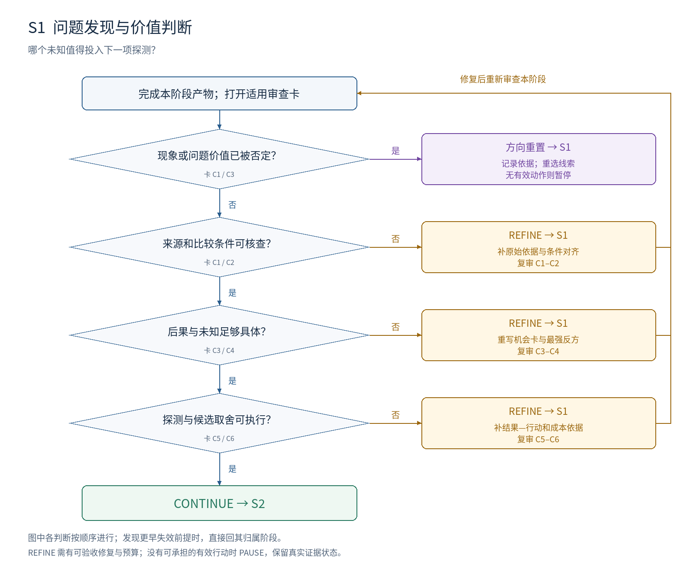
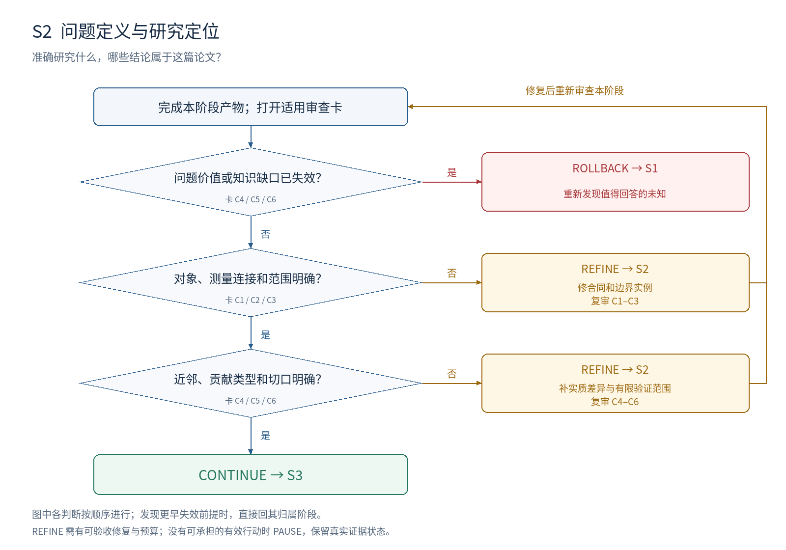
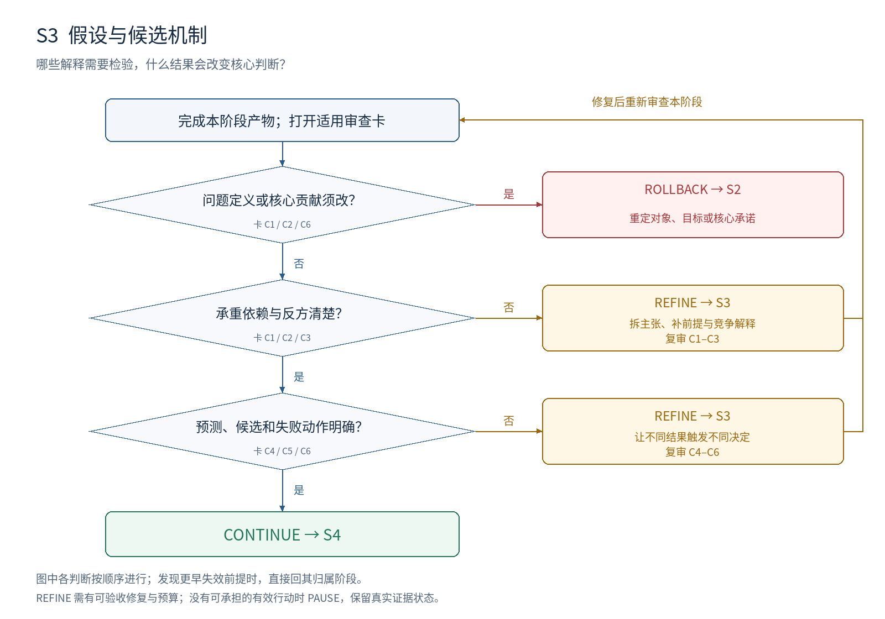
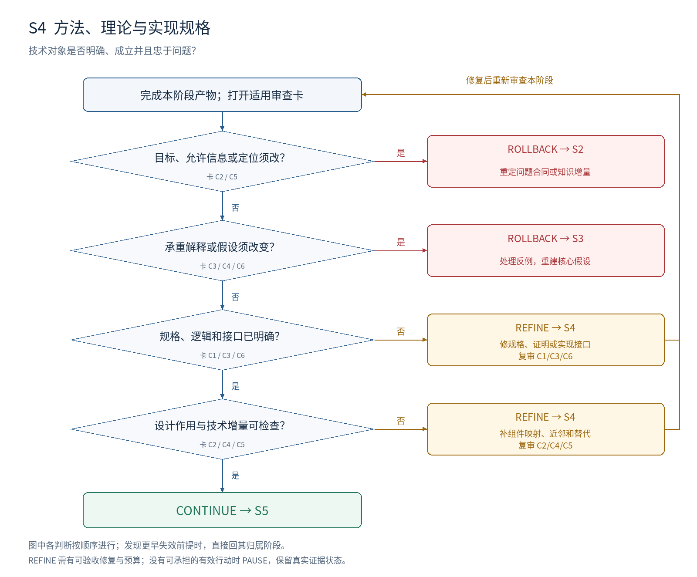
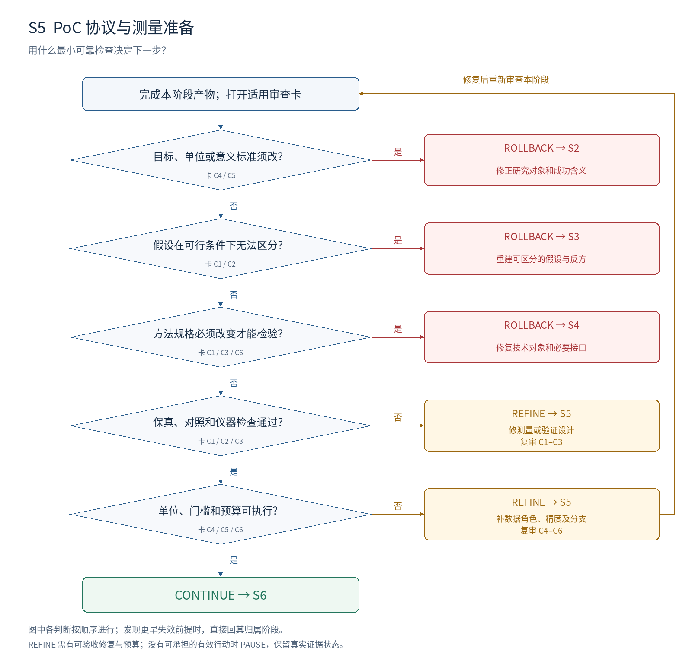
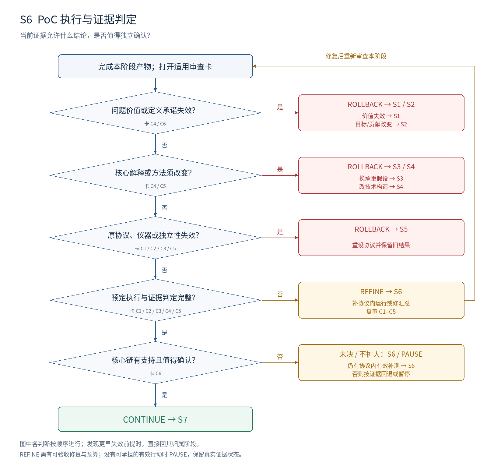
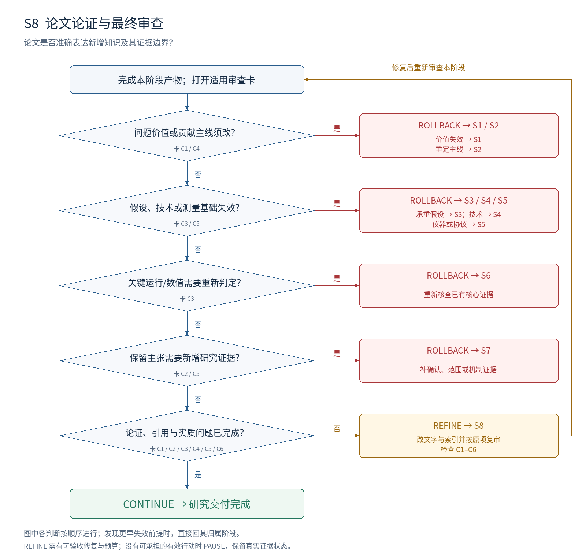

把研究问题推进为可辩护的论文
按阶段完成产物，按证据批评，按问题归属修复。
Idea → Paper：可执行的无代码审查工作流
版本 4.0 · 2026-09-14 · 八阶段 / 48 张审查卡 / 九张决策图
先打开 START_HERE.html。它是离线阅读版，包含完整手册、逐阶段图示和模板导航；不需要联网、安装依赖或运行程序。Markdown 文件便于复制、填写和交给研究者或 agent。
本包定义的是研究组织、审查和决策方式。实际研究需要的实验、数据处理或证明工作，仍按相应阶段合同完成；“codeless”不意味着用文字代替研究证据。
第一次使用，依次做这六步
- 打开 templates/T0_PROJECT_AND_STAGE_CARD.md，填写长期问题、当前材料、资源和阶段预算。
- 没有成形问题从 S1 开始；已有草稿按 01_OPERATING_RULES.md 的“定位当前阶段”检查，找到最早尚未完成的阶段。
- 打开该阶段手册，只执行“工作步骤”，交付列出的最小产物。成熟结论汇入一份统一主稿。
- 审核者逐卡检查实际产物，用 T1 记录位置、问题、后果和验收条件。空白证据不能勾通过。
- 按该阶段决策图与 02_DECISION_AND_ROLLBACK_MAP.md 选 CONTINUE / REFINE_INLOOP / ROLLBACK，填目标阶段。
- 修复者按验收条件修改；复审原问题。回退时用 T4 登记受影响依赖，修复后只复核有关结论。
每轮结束必须能回答
| 问题 | 必填答案 |
|---|
| 现在在哪个阶段？ | S1–S8 及有效输入版本 |
| 本轮检查什么？ | 本阶段适用的审查卡及到期义务 |
| 哪里不满足？ | 产物位置、实际内容和具体证据 |
| 为什么阻塞？ | 受影响的决定、假设或主张 |
| 要改成什么？ | 可检查的目标产物与验收动作 |
| 下一步是什么？ | 动作、目标阶段、工作、负责人/执行角色和预算 |
文件怎么用
| 文件或目录 | 用途 |
|---|
| START_HERE.html | 完整离线阅读入口；正文和图示不依赖外网 |
| 01_OPERATING_RULES.md | 工作分工、证据状态、审查优先级、循环和交接 |
| 02_DECISION_AND_ROLLBACK_MAP.md | 各阶段独有的判断顺序和跨阶段跳转 |
| 03_MEASUREMENT_AND_ARCHETYPES.md | 衡量、门槛选择、证据强度与贡献类型适配 |
| stages/ | 八份可单独使用的阶段操作手册，含全部 48 张审查卡 |
| examples/ONE_FILLED_REVIEW.md | 一份完整填好的教学审核，展示修复验收与根因分流 |
| templates/ | 六份直接复制填写的表单；不需要 YAML 或配置语言 |
| diagrams/ | 总架构与八阶段决策图，SVG 可编辑，PNG 可直接查看 |
| sources/ | 七份上传分析的来源映射与原文备查；正文不采用单篇贯穿案例 |
审查卡统一回答：为什么查、在哪里查、怎么查、什么算有问题、期望什么、怎么修、如何验收、失败往哪里走。所有示例均明确标注为教学虚构，不是实验结果。
版本与使用范围
v4 将 v3 的 32 项概要判据展开、重组为 48 张操作卡；新增逐阶段判断顺序、跨阶段回退、证据失效规则、填写模板和离线图文版。
这是从七份论文分析中归纳并补充设计的通用研究流程。它不是对七位作者真实研发历史的证明，也没有被本次工作验证为最佳流程。理论、实证、资源、系统等贡献按适配表启用各自义务。
审查卡 ID 在 v4 内稳定；v3 的四项概要已重新拆分，不能只按同名编号继承旧审核结论。
操作规则：怎样实际完成一轮审查
三种职能与固定交接
| 职能 | 本轮必须做的事 | 交付 |
|---|
| 研究执行者 / Builder | 按阶段步骤制作产物，引用依据，明确未知 | 阶段产物、证据索引、版本与自查 |
| 审核者 / Critic | 对照每张适用审查卡，检查产物与原始证据 | T1：逐项状态、阻塞 issue、修复验收 |
| 决策执行者 / Controller | 根据问题归属选择动作，维护预算与依赖 | T4 或交接单：动作、目标、原因、待重查项 |
修复由 Builder 按 issue 的验收条件完成，再交 Critic。一个研究者可以分时执行三种职能；不同角色名称不构成独立验证。需要独立确认时，必须引入适当的新信息、重新推导或从原始材料开展独立复核。
定位当前阶段
已有草稿不必重做所有工作。按 S1→S8 顺序看“最小产物”和适用判据：能给有效版本与证据就引用；第一个存在阻塞缺口的阶段是当前阶段。未经核查不默认通过。若只是一个前期记录缺页但可从已有材料恢复，可补该阶段记录后返回当前工作。
写作从 S2 开始持续进行；S8 是最终论证与审计阶段。
一轮的七个动作
- 固定输入。 T0 写阶段 ID、上游版本、主要贡献类型、当前必需项、后续义务及本轮预算。
- 交产物。 执行者按阶段步骤工作；给每个关键观察/运行/证明一个可引用证据编号。
- 逐项审查。 审核者先检查上游依赖，再按本阶段六张卡检查产物。不得以个人偏好添加阻塞。
- 写 issue。 每个阻塞问题定位一处具体内容，给依据、后果、归属与可检查修复目标。
- 决定动作。 先处理最早失效且仍阻塞的上游前提；没有上游失效时才处理本阶段缺口；全部通过才继续。
- 修复与复审。 先按原 issue 的验收方式核查修复，再检查其影响的关联项；关闭要有证据。
- 交接。 写当前结论、动作、目标阶段、开放问题、下一项工作和剩余预算。
状态如何填写
| 审查状态 | 使用条件 | 对通行的影响 |
|---|
| NOT_REVIEWED | 尚未检查；只是表单初始状态 | 不能通过 |
| MET | 当前到期义务有对应产物与依据 | 该项通过 |
| GAP | 本阶段该有的内容缺失，尚无法判断 | 必需项阻塞 |
| CONFLICT | 产物与证据、定义或合同冲突 | 必需项阻塞，需定位归属 |
| N/A | 当前贡献类型没有这项义务，理由已记录 | 不计入适用必需项；不是失败后的豁免 |
每轮报告适用必需项数、MET 数和开放阻塞；不把计数当论文质量分。所有适用必需项 MET、无阻塞的上游问题，才 CONTINUE。 所谓 MET，是本阶段义务完成；不是所有科学假设都为真。
科学证据另外填写：UNTESTED / INCONCLUSIVE / SUPPORTED_IN_SCOPE / CONTRADICTED_IN_SCOPE。无效测量先记证据有效性 INVALID，不据此改成科学反证。理论证明、前提和新颖性分别用其适用义务判断，不能由一条综合效果状态代替。
有效的批评长什么样
“创新性不够”必须进一步指出哪项近邻已覆盖哪个技术或问题承诺；“实验不充分”必须指出缺少哪项比较、为何它会改变哪条主张；“不清楚”必须指出两种合理理解及其会造成的不同研究对象。
每个阻塞 issue 至少有：ID、审查卡 ID、产物版本和位置、观察到的问题、期望、证据、影响、归属阶段、修复动作、验收方式。没有证据但值得关注的可能性可以登记为待检查风险，不能直接宣布冲突成立。
作者不同意 critique 时，用具体依据回应；审核者不能靠换措辞无限重复同一个没有证据的判断。仍有实质分歧时，登记双方观点与最小区分性检查；未解决前保持开放。
三种转移与退出
- CONTINUE：本阶段义务完成。冻结产物并交给下一阶段；S8 完成则交付论文与证据索引。
- REFINE_INLOOP：当前阶段拥有要修改的产物；保持上游有效承诺，完成修复再审。
- ROLLBACK：需改变或重新验证上游承诺；写出明确目标与受影响依赖，不固定退一格。
PAUSE/CLOSE 是项目状态，不是第四种常规转移。没有可承担的有效行动时暂停；不再投入当前分支时关闭并保留记录。科学状态可以仍为未决。S1 是起点，没有虚构的上游阶段；方向失效时登记重置 S1 或退出。
控制循环：允许探索，保留判断纪律
阶段启动时填写本轮工作预算和最大复审轮数。若没有历史成本，可将“首次交付＋最多两轮针对性修复”作为讨论流程的起始安排；这是可调整的组织设置，不是实验样本量或科学门槛。预计不能在该范围内完成的工作，应预先写更合适的预算。
每次复审要产生可检查进展：新依据、消除歧义、修正错误、区分解释或有根据地调整范围。写作阶段修清表达也算有效进展，但不能冒充新增科学证据。
达到上限时：有上游失效就回退；有具体有效修复则记录新预算后继续；没有有效行动则暂停/关闭。不得降低判据或删除失败来通过。复审优先处理原 issue；新问题只有给出新的具体依据及后果才成为阻塞。
回退之后如何返回
- 冻结原版本和旧结果；记录触发回退的证据。
- 标出失效前提及依赖它的假设、方法、协议、结果或主张。
- 相关结论标 NEEDS_RECHECK；无关原始记录和有效结论保留。
- 在目标阶段修复并重新过关，沿依赖链复核受影响义务。
- 没有改变的阶段可以引用仍有效的记录，不要求全部重做；不得把旧方法的证据自动移给新方法。
材料缺失时做什么
找不到证据时标 GAP 或 UNTESTED；没有资源时暂停；没有明确问题时回到 S1。不要填“预计通过”代替证据。模板中的空白和教学示例都不是实际研究结论。
决策与跨阶段回退
唯一的归属原则
先识别需要改变或重新验证的对象，再找拥有它的阶段。属于当前阶段就 REFINE_INLOOP；属于更早阶段才 ROLLBACK。若多个前提失效，先修最早且仍阻塞当前结论的前提。
| 失效对象 | 目标阶段 | 到那里具体修什么 |
|---|
| 现象入口或重要后果 | S1 | 来源、现象比较、价值与下一探测 |
| 研究单位、目标、信息、范围或主要贡献 | S2 | 问题合同和近邻定位 |
| 承重假设、解释或区分预测 | S3 | 假设依赖、反方与反证 |
| 技术对象、构造、方法身份或核心推导 | S4 | 规格、接口、逻辑与实现对象 |
| 测量、对照、样本/独立单位或判定协议 | S5 | 验证设计、仪器与决策标准 |
| 实际执行、汇总或已有证据判定 | S6 | 运行、重算和假设状态 |
| 独立确认、扩展、边界或论文证据范围 | S7 | 缺失的对应证据或本阶段外推 |
| 文字、引用位置、论证组织 | S8 | 表达与索引；证据充分时无需新实验 |
卡 ID 说明当前从哪里发现问题，owner stage 说明要在哪里修；两者可以不同。例如 S8-C3 发现仪器错误，目标是 S5。
两种容易混淆的情况
新增研究与旧前提失效。 S7 新增一个合法的扩展条件，可以在 S7 按 S5 相同原则准备协议和仪器检查；若新信息证明原测量原则无效，则回 S5。不能把所有新增实验一律当回退，也不能用“扩展”掩盖原证据失效。
缩小措辞与改掉贡献。 S8 将过强措辞改回已经支持的核心范围，可以本阶段修；若改动意味着核心研究问题、贡献类型或价值承诺变了，回 S2，必要时 S1。
图的读取规则
- 按从上到下顺序判断；上游失效优先于当前格式缺口。
- 蓝色主线的“是/否”必须按当前问题读取，不是全部“是”才继续。
- 红色是明确目标的回退；黄色是当前阶段修复；绿色是下一阶段或完成。图中 REFINE 是 REFINE_INLOOP 的缩写。未决是科学状态，方向重置、PAUSE/CLOSE 是起点或退出处理，不新增常规转移动作。
- 多目标框已经给出对象分流。实际交接单必须只填当前最早需要修的一个目标。
- 图列出本阶段主要分支；若出现未画出的更早失效对象，直接按上表回退，并记录依据。
- 所有工作分支都受资源条件约束。无可承担行动时 PAUSE/CLOSE，保留原科学状态。
S1：问题发现与价值判断
| 顺序 | 判断 | 沿主线条件 | 另一分支及动作 |
|---|
| 1 | 现象或问题价值已被否定？ | 否 → 下一判断 | 是 → RESET S1；记录依据；重选线索；无有效动作则暂停 |
| 2 | 来源和比较条件可核查？ | 是 → 下一判断 | 否 → REFINE S1；补原始依据与条件对齐；复审 C1–C2 |
| 3 | 后果与未知足够具体？ | 是 → 下一判断 | 否 → REFINE S1；重写机会卡与最强反方；复审 C3–C4 |
| 4 | 探测与候选取舍可执行？ | 是 → 下一判断 | 否 → REFINE S1；补结果—行动和成本依据；复审 C5–C6 |
| 全部通过 | 全部适用必需项 MET、无上游阻塞 | CONTINUE → S2 | 预算不足时暂停，不降低判据 |
S2：问题定义与研究定位
| 顺序 | 判断 | 沿主线条件 | 另一分支及动作 |
|---|
| 1 | 问题价值或知识缺口已失效？ | 否 → 下一判断 | 是 → ROLLBACK S1；重新发现值得回答的未知 |
| 2 | 对象、测量连接和范围明确？ | 是 → 下一判断 | 否 → REFINE S2；修合同和边界实例；复审 C1–C3 |
| 3 | 近邻、贡献类型和切口明确？ | 是 → 下一判断 | 否 → REFINE S2；补实质差异与有限验证范围；复审 C4–C6 |
| 全部通过 | 全部适用必需项 MET、无上游阻塞 | CONTINUE → S3 | 预算不足时暂停，不降低判据 |
S3：假设与候选机制
| 顺序 | 判断 | 沿主线条件 | 另一分支及动作 |
|---|
| 1 | 问题定义或核心贡献须改？ | 否 → 下一判断 | 是 → ROLLBACK S2；重定对象、目标或核心承诺 |
| 2 | 承重依赖与反方清楚？ | 是 → 下一判断 | 否 → REFINE S3；拆主张、补前提与竞争解释；复审 C1–C3 |
| 3 | 预测、候选和失败动作明确？ | 是 → 下一判断 | 否 → REFINE S3；让不同结果触发不同决定；复审 C4–C6 |
| 全部通过 | 全部适用必需项 MET、无上游阻塞 | CONTINUE → S4 | 预算不足时暂停，不降低判据 |
S4：方法、理论与实现规格
| 顺序 | 判断 | 沿主线条件 | 另一分支及动作 |
|---|
| 1 | 目标、允许信息或定位须改？ | 否 → 下一判断 | 是 → ROLLBACK S2；重定问题合同或知识增量 |
| 2 | 承重解释或假设须改变？ | 否 → 下一判断 | 是 → ROLLBACK S3；处理反例，重建核心假设 |
| 3 | 规格、逻辑和接口已明确？ | 是 → 下一判断 | 否 → REFINE S4；修规格、证明或实现接口；复审 C1/C3/C6 |
| 4 | 设计作用与技术增量可检查？ | 是 → 下一判断 | 否 → REFINE S4；补组件映射、近邻和替代；复审 C2/C4/C5 |
| 全部通过 | 全部适用必需项 MET、无上游阻塞 | CONTINUE → S5 | 预算不足时暂停，不降低判据 |
S5：PoC 协议与测量准备
| 顺序 | 判断 | 沿主线条件 | 另一分支及动作 |
|---|
| 1 | 目标、单位或意义标准须改？ | 否 → 下一判断 | 是 → ROLLBACK S2；修正研究对象和成功含义 |
| 2 | 假设在可行条件下无法区分？ | 否 → 下一判断 | 是 → ROLLBACK S3；重建可区分的假设与反方 |
| 3 | 方法规格必须改变才能检验？ | 否 → 下一判断 | 是 → ROLLBACK S4；修复技术对象和必要接口 |
| 4 | 保真、对照和仪器检查通过？ | 是 → 下一判断 | 否 → REFINE S5；修测量或验证设计；复审 C1–C3 |
| 5 | 单位、门槛和预算可执行？ | 是 → 下一判断 | 否 → REFINE S5；补数据角色、精度及分支；复审 C4–C6 |
| 全部通过 | 全部适用必需项 MET、无上游阻塞 | CONTINUE → S6 | 预算不足时暂停，不降低判据 |
S6：PoC 执行与证据判定
| 顺序 | 判断 | 沿主线条件 | 另一分支及动作 |
|---|
| 1 | 问题价值或定义承诺失效？ | 否 → 下一判断 | 是 → ROLLBACK S1 / S2；价值失效 → S1；目标/贡献改变 → S2 |
| 2 | 核心解释或方法须改变？ | 否 → 下一判断 | 是 → ROLLBACK S3 / S4；换承重假设 → S3；改技术构造 → S4 |
| 3 | 原协议、仪器或独立性失效？ | 否 → 下一判断 | 是 → ROLLBACK S5；重设协议并保留旧结果 |
| 4 | 预定执行与证据判定完整？ | 是 → 下一判断 | 否 → REFINE S6；补协议内运行或修汇总；复审 C1–C5 |
| 5 | 核心链有支持且值得确认？ | 是 → 下一判断 | 否 → REFINE S6（协议内有效补测）；需改上游则 ROLLBACK；无有效动作则 PAUSE；仍有协议内有效补测 → S6；否则按证据回退或暂停 |
| 全部通过 | 全部适用必需项 MET、无上游阻塞 | CONTINUE → S7 | 预算不足时暂停，不降低判据 |
S7：独立确认与证据扩展
| 顺序 | 判断 | 沿主线条件 | 另一分支及动作 |
|---|
| 1 | 问题价值或贡献定位须改？ | 否 → 下一判断 | 是 → ROLLBACK S1 / S2；价值失效 → S1；范围/增量失效 → S2 |
| 2 | 承重解释或技术对象须改？ | 否 → 下一判断 | 是 → ROLLBACK S3 / S4；换机制解释 → S3；改技术构造 → S4 |
| 3 | 原协议失效或核心需重判？ | 否 → 下一判断 | 是 → ROLLBACK S5 / S6；测量/独立性原则 → S5；已有核心证据判定 → S6 |
| 4 | 独立确认与公平比较通过？ | 是 → 下一判断 | 否 → REFINE S7；补本阶段确认和成本对照；复审 C1/C3 |
| 5 | 范围、边界与证据闭环完成？ | 是 → 下一判断 | 否 → REFINE S7；补必要证据或收紧外推；复审 C2/C4–C6 |
| 全部通过 | 全部适用必需项 MET、无上游阻塞 | CONTINUE → S8 | 预算不足时暂停，不降低判据 |
S8：论文论证与最终审查
| 顺序 | 判断 | 沿主线条件 | 另一分支及动作 |
|---|
| 1 | 问题价值或贡献主线须改？ | 否 → 下一判断 | 是 → ROLLBACK S1 / S2；价值失效 → S1；重定主线 → S2 |
| 2 | 假设、技术或测量基础失效？ | 否 → 下一判断 | 是 → ROLLBACK S3 / S4 / S5；承重假设 → S3；技术 → S4；仪器或协议 → S5 |
| 3 | 关键运行/数值需要重新判定？ | 否 → 下一判断 | 是 → ROLLBACK S6；重新核查已有核心证据 |
| 4 | 保留主张需要新增研究证据？ | 否 → 下一判断 | 是 → ROLLBACK S7；补确认、范围或机制证据 |
| 5 | 论证、引用与实质问题已完成？ | 是 → 下一判断 | 否 → REFINE S8；改文字与索引并按原项复审；检查 C1–C6 |
| 全部通过 | 全部适用必需项 MET、无上游阻塞 | CONTINUE → 完成研究交付 | 预算不足时暂停，不降低判据 |
回退后的三个示范（教学虚构）
| 情形 | 跳转 | 哪些要重查 | 哪些不必自动重做 |
|---|
| S8 发现“成功”的底层度量定义有误 | S8 → S5；若真实目标也错，直接 S2 | 该指标的仪器、汇总及依赖主张 | 不依赖该指标的形式证明与原始记录 |
| S7 反例否定核心机制，但测量可信 | S7 → S3 | 新假设对应的方法、协议、结论 | 旧版本真实负结果和已经核实的来源事实 |
| S6 发现原协议要求的汇总漏了一组 | REFINE S6 | 汇总、区间和依赖结论 | 无需更换目标、方法或重新采集仍有效的原始数据 |
S1 无上游阶段：材料不足在本阶段补；方向或价值失效就记录重置或退出。回退不删除证据；新对象要重新判断旧证据是否适用。
衡量与贡献类型适配
三种判断必须分开
| 判断 | 记录什么 | 不允许替代什么 |
|---|
| 阶段完成度 | 到期义务、审查状态、开放 issue | 不等于假设为真或论文能录用 |
| 科学证据 | 目标量、效果/证明/构念依据、条件、不确定性 | 不由投入多少时间决定 |
| 下一步投资 | 什么检查可能改变重要判断、成本和可行性 | 不改变未决/支持/反证状态 |
S3 的假设表完整可以通过，但所有经验假设仍未测。S6 的实验可以完整执行却否定原收益目标：执行完成与扩大研究的关口是两件事，后者还需有值得确认的限定贡献。
如何为经验目标选择门槛
- 先在 S2 说明什么变化会改变实际选择、理论解释或目标能力。
- 在 S5 定义待估量：相对谁、在哪个单位和范围、改善方向是什么、成本/损害怎样计算。
- 选择最小有意义变化 δ，并记录依据：使用要求、已知误差尺度、资源权衡或区分理论预测的需要。不能只因为当前结果恰好超过它。
- 选择能处理当前独立单位、分组依赖和查看规则的不确定性方法，说明预期精度。无法可靠设定时先做探索性校准，校准数据不冒充独立确认。
- 事前写支持、反对和未决规则。不同主张需要各自的目标、证据和范围；避免挑选有利主量。
对“改善超过 δ”的经验主张，可事先约定下表。改善越大越好，区间 [L,U] 由协议指定方法得到；这是适用时的决策规则，不是通用统计检验替代品。
| 条件 | 科学解释 | 行动 |
|---|
| L > δ | 在当前条件和分析假设下支持超过意义门槛 | 其他义务也通过时继续独立确认 |
| U < δ | 在相应证据强度下排除预定收益幅度 | 重审收益主张；不等于排除一切正收益或证明机制不存在 |
| L ≤ δ ≤ U | 不能决定是否达到门槛 | 预定补证据或保持未决；需改协议则回 S5 |
| 测量/前提无效 | 无法据此解释科学假设 | 先修复有效性，不套用前三行 |
对效率主张，明确质量约束和成本范围；更便宜但质量低于目标不能自动判成功。对无差异/等价主张，要预定等价范围和相应判断方法，不能用“不显著”代替等价。对多个核心主张、反复查看和候选选择，应在协议中明确相应误差与选择处理；未处理时收紧结论强度。
证据强度如何随阶段改变
| 阶段 | 当前可以要求的证据 | 不应提前要求 |
|---|
| S1 | 可信来源、可检查构造、后果和下一项探测 | 主假设已成立 |
| S2 | 可判定定义、近邻依据、测量目标连接 | 方法已全面领先 |
| S3 | 依赖、区分预测、反证和失败后果 | 已获得所有实验结果 |
| S4 | 精确技术对象、必要逻辑、信息可得性和走例 | 所有经验效果已证明 |
| S5 | 可信测量、保真验证范围、能触发动作的协议 | 只允许正效果 |
| S6 | 真实、有效、足够作当前决定的 PoC 证据 | 完整领域外推 |
| S7 | 与保留主张匹配的独立确认、范围、边界和成本 | 与主张无关的榜单数量 |
| S8 | 准确论证、原始证据复核和可追溯性 | 真实录用保证 |
按主要贡献类型替换义务
本包以经验研究的常见术语描述检查，启用时先填贡献类型。表中的替换是具体审核对象的改变，不能在某项失败后临时勾 N/A。
| 类型 | S3–S4 要形成什么 | S5–S6 最小验证 | S7–S8 要支撑什么 |
|---|
| 方法 | 可检验机制、明确技术对象与信息条件 | 忠实实现、强简单对照、核心结果及必要机制 | 公平比较、独立确认、适用范围 |
| 效率 | 质量约束、成本对象与预期权衡 | 相关成本与质量的共同判断 | 构建/选择/使用等相关全成本与条件 |
| 实证发现 | 现象定义、竞争解释与分析逻辑 | 有效测量、针对主要伪影和反方的检查 | 稳健性、边界和与解释强度匹配的证据 |
| 基准/资源 | 构念、来源、构建和标注规格 | 参照质量、泄漏控制、有效样例与能力区分 | 覆盖、质量、误差、文档和可复用性 |
| 系统 | 系统级假设、组件职责和完整过程 | 可核查产物、必要系统对照 | 同条件完整过程比较、正确重复层级、失败和成本 |
| 理论 | 定义、量词、主命题、假设和证明 | 关键证明、反例、非平凡性与边界检查 | 完整证明与已有结果差异；应用结论另验 |
| 观点/论证 | 明确命题、前提、最强反方和论证链 | 原始依据、反例及关键推理检查 | 可辩护的范围、回应反方和具体含义 |
纯理论与观点两行是为通用使用增加的适配，不声称七份材料代表了这些类型的全貌。
例如，纯理论的 S5-C3“仪器”可替换为定义、参考命题及反例构造的正确性；S7-C1 可替换为独立推导/证明复核。资源研究不能仅靠主模型得分过关；需要构念、标注和覆盖证据。方法论文若不保留强机制结论，不必把所有工程组件都证明为因果必需，但其核心技术贡献仍需充分支持。
避免形式合规代替判断
表格填满并不自动达标；审核者必须打开所引用的材料。定量门槛不能替代重要性、新颖性与解释力的有据论证。任何新增硬门槛都要说明它保护哪项当前承诺，避免“看起来更严格”却与研究问题无关的要求。
S1：问题发现与价值判断
本阶段要决定：哪个未知值得投入下一项探测？
进入条件
研究方向与资源约束；原始文献、观察或可检查的理论构造。没有具体 idea 也可以进入。
按顺序做什么
- 先写想获得的能力或想解释的现象，不写拟采用的模块。
- 建线索表：预期、实际、条件、来源、解释、后果各一列；每条观察绑定来源位置。
- 沿五个入口找问题：预期落差、指标失真、未经验证的前提、成功/失败边界、新能力改变旧约束。
- 为每条线索写最强正常解释，做条件对齐；把仍存在的未知写成候选问题。
- 为候选写最便宜的区分性探测，比较价值、可检验性和成本，选择下一项行动。
最小交付
- 问题机会卡：条件 C、预期 E、观察 O、未知 K、后果 D、反方 A、探测 T。
- 线索来源表与候选取舍记录；保留被排除候选的理由。
此时不要求什么
完整方法、最终效果、全面创新性审计。此时只需可信线索及值得探测的未知。
独有决策图

查看可编辑 SVG
图中主线条件表示进入下一判断；侧向分支表示修复或跳到指定阶段。多目标框按所列失效对象选择一个实际目标，不能一次同时跳转。任何已发现的更早失效前提，均优先按回退归属表处理。
六张解释性审查卡
每张卡按主要贡献类型启用。执行前均未审核；每项结论需要本项目的证据定位。卡内所列是可能症状，不能据此假定项目确实有该问题。
S1-C1 线索可核查
为什么查： 未经核查的叙述会把后续工作建在不存在的现象上。
检查哪里： 机会卡“观察”；来源表中的原文、记录或构造。
怎么检查： 打开每条决定性依据，核对实际报告的对象、条件和结论；区分原文、推断和建议。
什么算有问题： 只引用二手总结；把可能性写成事实；来源没有对应观察。
期望产物： 每个决定性观察有可回到原处的定位；未观察的可能性明确标为假设。
最小修复： 补原始依据，或把无依据断言降为待检验线索。
如何验收： 审核者能从定位重建观察，并指出哪些内容仍未知。
失败后的动作与归属： REFINE S1；若观察被否定且没有剩余价值，重置 S1 或关闭该分支。
本轮填写： 状态 [ ]；项目证据位置 [ ]；Issue ID [ ]；实际验收记录 [ ]。
S1-C2 比较条件一致
为什么查： 不同任务、信息或资源造成的差异未必是科学矛盾。
检查哪里： 线索表“条件”；被比较方法的输入、预算、样本与指标。
怎么检查： 逐项对齐条件；不能对齐的差异先作为竞争解释。
什么算有问题： 把大模型和小模型、不同样本或不同资源下的分数直接称为矛盾。
期望产物： 明确剩余差异是在何种可比条件下出现；未对齐因素有标记。
最小修复： 补同条件比较，或将问题改为“该条件怎样影响结果”。
如何验收： 对每项差异，能说明已控制、需检验或不影响判断的依据。
失败后的动作与归属： REFINE S1；差异完全被正常条件解释时重新选择线索。
本轮填写： 状态 [ ]；项目证据位置 [ ]；Issue ID [ ]；实际验收记录 [ ]。
S1-C3 价值对应具体后果
为什么查： 题目宏大与研究有价值不是同一个判断。
检查哪里： 机会卡“后果”；使用场景、理论限制或研究选择的依据。
怎么检查： 完成句子“若解决 K，谁能在什么条件下改变哪个决定”；检查支持依据。
什么算有问题： 只写热门、首次、提高智能；解决前后没有可辨认变化。
期望产物： 明确受影响的能力、解释或选择，以及当前缺口怎样阻碍它。
最小修复： 补后果链与具体场景；若只是方便实现，重新判断其科学价值。
如何验收： 即使去掉方法名字，读者仍能说清问题的重要性。
失败后的动作与归属： REFINE S1；后果不成立则重置方向或暂停。
本轮填写： 状态 [ ]；项目证据位置 [ ]；Issue ID [ ]；实际验收记录 [ ]。
S1-C4 未知具体且未被原因预占
为什么查： 把拟做方法写进问题，会阻止发现其他解释。
检查哪里： 问题句；机会卡“未知”和“反方”。
怎么检查： 把“缺少模块 M”改写成可观察缺口；尝试用另一类机制解释同一现象。
什么算有问题： 问题是“如何加入 M”；删掉 M 后就无法说明研究对象。
期望产物： 问题描述独立于候选方法；至少一个合理反方可能成立。
最小修复： 重写现象和未知；暂不承诺造成现象的原因。
如何验收： 两个不同候选方案都能针对该问题提出可检查预测。
失败后的动作与归属： REFINE S1；不要求这时已经知道真正原因。
本轮填写： 状态 [ ]；项目证据位置 [ ]；Issue ID [ ]；实际验收记录 [ ]。
S1-C5 下一项探测能改变决定
为什么查： 不能区分解释的活动只会增加材料，不会帮助选择方向。
检查哪里： 机会卡“探测”；所需数据、观察、干预或证明检查。
怎么检查： 分别写支持、反对和未决时会采取的动作；检查探测能否触发这些分支。
什么算有问题： 只写“多读论文”或“跑一个模型”；任何结果都继续原方案。
期望产物： 有可执行对象、所需条件、成本上限，以及结果到动作的对应。
最小修复： 换成定位明确的阅读核查、成对观察、干预或反例搜索。
如何验收： 审核者能指出哪种结果会取消、修改或推进当前候选。
失败后的动作与归属： REFINE S1；暂不可探测时暂停，不把不可测写成错误。
本轮填写： 状态 [ ]；项目证据位置 [ ]；Issue ID [ ]；实际验收记录 [ ]。
S1-C6 选题取舍透明
为什么查： 只保留最喜欢的候选，会隐藏同样有价值但更便宜的路径。
检查哪里： 候选表、资源约束与选择理由。
怎么检查： 比较下一步的价值、区分能力与成本；只有一个候选时说明来源和局限。
什么算有问题： 以综合印象分排名；无法说明为什么值得花下一笔资源。
期望产物： 选中的候选有可信入口、重要未知和可承担动作；其他候选有保留或放弃理由。
最小修复： 缩小下一步行动，不必先缩小长期问题；补关键竞争候选。
如何验收： 另一位研究者能依据取舍记录理解选择；不要求同意个人偏好。
失败后的动作与归属： REFINE S1；全部无可承担动作则暂停或重置。
本轮填写： 状态 [ ]；项目证据位置 [ ]；Issue ID [ ]；实际验收记录 [ ]。
执行判断的顺序
| 顺序 | 判断 | 沿主线条件 | 另一分支及动作 |
|---|
| 1 | 现象或问题价值已被否定？ | 否 → 下一判断 | 是 → RESET S1；记录依据；重选线索；无有效动作则暂停 |
| 2 | 来源和比较条件可核查？ | 是 → 下一判断 | 否 → REFINE S1；补原始依据与条件对齐；复审 C1–C2 |
| 3 | 后果与未知足够具体？ | 是 → 下一判断 | 否 → REFINE S1；重写机会卡与最强反方；复审 C3–C4 |
| 4 | 探测与候选取舍可执行？ | 是 → 下一判断 | 否 → REFINE S1；补结果—行动和成本依据；复审 C5–C6 |
| 全部通过 | 全部适用必需项 MET、无上游阻塞 | CONTINUE → S2 | 预算不足时暂停，不降低判据 |
一次实际审查应如何表达（教学虚构）
教学虚构：机会卡只写“现有方法不可靠”。S1-C1/C4 判 GAP：无失败位置、条件和后果。修复为“在条件 C 的记录 E-03 中出现失败 F；它影响决定 D，可能由数据偏差 A 解释；探测 T 区分两者”。补齐原始依据后复审，留在 S1，不提前设计方法。
离开本阶段前的交接
填写 T1 审查结果与 T4 交接单：S1 有效输入和产物版本、开放 issue、证据状态、动作与目标、下一项工作及预算。回退先标记受影响依赖；阶段内修复按原 issue 验收后复审。
S2：问题定义与研究定位
本阶段要决定：准确研究什么，哪些结论属于这篇论文？
进入条件
S1 机会卡及来源；候选贡献方向；已有工作检索记录。
按顺序做什么
- 填写研究单位、输入、允许信息、可改变对象、目标、资源、比较对象与范围。
- 把重要目标与可观测指标分开，写出两者连接所依赖的假设。
- 构造范围内、范围外和边界实例，检查定义能否稳定分类。
- 直接比较最接近的工作，记录相同条件下已解决和未解决的部分。
- 确定主要贡献类型、核心主张和后续外推；把定义固定为可引用版本。
最小交付
- 问题合同：U/C/I/X/T/M/B/R/G/N/K 字段及边界实例。
- 近邻对照表、检索范围与主要贡献类型；核心和外推主张清单。
此时不要求什么
方法优于基线的结果；所有候选技术细节。定位在 S4 具体方法形成后还要复核。
独有决策图

查看可编辑 SVG
图中主线条件表示进入下一判断；侧向分支表示修复或跳到指定阶段。多目标框按所列失效对象选择一个实际目标，不能一次同时跳转。任何已发现的更早失效前提，均优先按回退归属表处理。
六张解释性审查卡
每张卡按主要贡献类型启用。执行前均未审核；每项结论需要本项目的证据定位。卡内所列是可能症状，不能据此假定项目确实有该问题。
S2-C1 对象与信息边界明确
为什么查： 不明确研究单位和可用信息，会让不同实现回答不同问题。
检查哪里： 问题合同 U/C/I/X；主稿“问题定义”。
怎么检查： 让审核者只按合同复述输入、输出、单位、动作和可用信息；列出不允许访问的量。
什么算有问题： 任务与样本混用；训练时可用的标签被默认部署时可用。
期望产物： 第三方能界定一次研究实例，判断方法是否使用了允许信息。
最小修复： 补字段和边界案例；明确训练、分析与使用阶段的信息差异。
如何验收： 对同一实例，作者与审核者对单位及允许信息的判断一致。
失败后的动作与归属： REFINE S2；所需条件改变问题价值时回 S1。
本轮填写： 状态 [ ]；项目证据位置 [ ]；Issue ID [ ]；实际验收记录 [ ]。
S2-C2 目标与测量连接成立
为什么查： 代理分数变化不必然代表研究目标变化。
检查哪里： 合同 T/M；重要后果的依据。
怎么检查： 写“指标变化为何代表目标变化”；寻找指标改善而目标不改善的反例。
什么算有问题： 把运行成功等同任务正确；把局部忠实性等同完整能力。
期望产物： 解释连接条件，并标明连接本身是否需要在 S5–S7 验证。
最小修复： 更换或补充目标测量；未验证连接登记为承重假设。
如何验收： 审核者能区分直接目标证据、代理证据和仍欠缺的连接。
失败后的动作与归属： REFINE S2；目标即使测准也无意义时回 S1。
本轮填写： 状态 [ ]；项目证据位置 [ ]；Issue ID [ ]；实际验收记录 [ ]。
S2-C3 范围可判定
为什么查： 事后改变范围容易把失败从主要主张中删除。
检查哪里： 合同 G/N；纳入、排除和边界实例。
怎么检查： 逐个检查实例是否属于核心范围，并记录排除理由是否与结果无关。
什么算有问题： 只写“复杂任务”；排除规则依赖方法是否答对。
期望产物： 纳入范围能在看结果前判断；核心范围和未来扩展分开。
最小修复： 将模糊形容词操作化；记录例外及其目标依据。
如何验收： 审核者用规则得到相同分组；任何争议都能定位具体条款。
失败后的动作与归属： REFINE S2；范围缩小后价值消失则回 S1。
本轮填写： 状态 [ ]；项目证据位置 [ ]；Issue ID [ ]；实际验收记录 [ ]。
S2-C4 最近工作差异有依据
为什么查： 未搜到相同关键词不能证明未知问题尚未解决。
检查哪里： 近邻表；原论文的方法、条件与证据位置。
怎么检查： 按问题、机制和目标量分别检索；逐项比较任务、信息、约束、保证和证据范围。
什么算有问题： 只比论文标题；把同义表述当新问题；忽略更简单的已有答案。
期望产物： 明确在已核查范围内仍未回答的 K，并保留最强重合威胁。
最小修复： 补原文对照；区分新目标、不同条件、新对象和普通实现差异。
如何验收： 审核者能指出已有工作能覆盖什么，以及哪一项实质差异仍存在。
失败后的动作与归属： REFINE S2；同条件下已经充分回答且无新价值则回 S1。
本轮填写： 状态 [ ]；项目证据位置 [ ]；Issue ID [ ]；实际验收记录 [ ]。
S2-C5 贡献类型与主张一致
为什么查： 方法、发现、资源和理论要求不同证据，不能临时换标准保留赢家。
检查哪里： 主要贡献类型；核心主张清单。
怎么检查： 用一句话写论文增加什么；逐条指定应使用效果、机制、构念或证明证据。
什么算有问题： 实际只有基准诊断却声称提出有效方法；无法区分主次贡献。
期望产物： 一个主要贡献类型及相应核心主张；次要贡献单独加义务。
最小修复： 明确贡献承诺；将目前没有依据的宏大外推列为后续候选。
如何验收： 每条核心主张能对应后续的验证类型，没有孤立的装饰性主张。
失败后的动作与归属： REFINE S2；重新定位后无可解释增量则回 S1。
本轮填写： 状态 [ ]；项目证据位置 [ ]；Issue ID [ ]；实际验收记录 [ ]。
S2-C6 有限切口仍回答大问题
为什么查： 为了便宜而换成无关任务，不能验证原研究方向。
检查哪里： 资源 B、核心范围 G、下一步切口与机会卡。
怎么检查： 说明小范围验证保留哪个关键未知；列出需要的数据、观察或形式条件。
什么算有问题： 只选最易获得数据；没有解释小问题与长期目标的连接。
期望产物： 存在可承担的有限切口，并明确通过后能支持什么、仍不能支持什么。
最小修复： 收紧下一步范围；保留问题意义和必要条件，不预设全面泛化。
如何验收： 审核者能从小范围结果回到原问题的一项实质判断。
失败后的动作与归属： REFINE S2；当前约束不允许任何有效切口时回 S1 或暂停。
本轮填写： 状态 [ ]；项目证据位置 [ ]；Issue ID [ ]；实际验收记录 [ ]。
执行判断的顺序
| 顺序 | 判断 | 沿主线条件 | 另一分支及动作 |
|---|
| 1 | 问题价值或知识缺口已失效？ | 否 → 下一判断 | 是 → ROLLBACK S1；重新发现值得回答的未知 |
| 2 | 对象、测量连接和范围明确？ | 是 → 下一判断 | 否 → REFINE S2；修合同和边界实例；复审 C1–C3 |
| 3 | 近邻、贡献类型和切口明确？ | 是 → 下一判断 | 否 → REFINE S2；补实质差异与有限验证范围；复审 C4–C6 |
| 全部通过 | 全部适用必需项 MET、无上游阻塞 | CONTINUE → S3 | 预算不足时暂停，不降低判据 |
一次实际审查应如何表达（教学虚构）
教学虚构：合同把“失败任务”排除，但目标写“全部输入上的可靠性”。S2-C2/C3 判 CONFLICT。若目标仍是全部输入，修正分母与排除条件，留在 S2；若排除后才发现问题不再有重要后果，回 S1。
离开本阶段前的交接
填写 T1 审查结果与 T4 交接单：S2 有效输入和产物版本、开放 issue、证据状态、动作与目标、下一项工作及预算。回退先标记受影响依赖；阶段内修复按原 issue 验收后复审。
S3：假设与候选机制
本阶段要决定：哪些解释需要检验，什么结果会改变核心判断？
进入条件
S2 问题合同、贡献类型、核心主张和近邻对照。
按顺序做什么
- 从拟写的核心结论反向列出它必须依赖的前提，逐项编号 H1、H2 等。
- 区分前提、机制、结果、可获得性、效率和范围；画清依赖关系。
- 为承重假设提出最强替代解释，写出能区分双方的预测。
- 根据预测提出最小技术或分析候选，同时保留强简单方案。
- 登记支持、反驳、未决条件以及失败后要修改的对象。
最小交付
- 假设台账及依赖图；每条假设的证据类型、范围、反方和失败含义。
- 候选机制—预测—最小区分检查表。
此时不要求什么
经验假设已经为真、完整实验参数、最终跨场景收益。此阶段证明“值得且可以检验”。
独有决策图

查看可编辑 SVG
图中主线条件表示进入下一判断；侧向分支表示修复或跳到指定阶段。多目标框按所列失效对象选择一个实际目标，不能一次同时跳转。任何已发现的更早失效前提，均优先按回退归属表处理。
六张解释性审查卡
每张卡按主要贡献类型启用。执行前均未审核；每项结论需要本项目的证据定位。卡内所列是可能症状，不能据此假定项目确实有该问题。
S3-C1 承重主张完整且分层
为什么查： 一项高分不能同时证明机制、可学习性和泛化。
检查哪里： 核心主张清单；假设台账“类型”和“作用”。
怎么检查： 对每个拟保留结论问“什么必须先成立”；拆开具有不同证据需求的连接。
什么算有问题： 一个 H 同时承诺有效、便宜、可迁移；只登记最容易成功的结果。
期望产物： 每个核心结论可追到足够的前提与子假设；辅助猜测明确标为非核心。
最小修复： 拆复合命题、补隐藏前提，删除没有论证作用的装饰性条目。
如何验收： 遮住某一承重行后，能准确指出哪项结论失去依据。
失败后的动作与归属： REFINE S3；假设不再回答原目标则回 S2。
本轮填写： 状态 [ ]；项目证据位置 [ ]；Issue ID [ ]；实际验收记录 [ ]。
S3-C2 依赖与可检验条件明确
为什么查： 前提不成立时，下游负结果未必能反驳机制。
检查哪里： 假设依赖图；数据支持、信息可得性与测量条件。
怎么检查： 沿每条依赖检查：父项失败后子项是否仍可解释；找循环依赖。
什么算有问题： 用最终效果证明前提，再用前提解释效果；验证所需对象无法定义。
期望产物： 依赖无自我支持；每项前提可检查、可证明或有清楚来源。
最小修复： 补前提检查，解除循环；将不能观察的量换成可检验表述。
如何验收： 对每个前提，能写出失败时哪些下游检验应标为无效或待重查。
失败后的动作与归属： REFINE S3；研究对象或允许信息必须重定义时回 S2。
本轮填写： 状态 [ ]；项目证据位置 [ ]；Issue ID [ ]；实际验收记录 [ ]。
S3-C3 竞争解释真的可能赢
为什么查： 人为设置很弱的反方不能提高解释的可信度。
检查哪里： 台账“反方”；候选的不同预测。
怎么检查： 考虑资源、样本选择、测量偏差和另一机制；写出使反方更可信的观察。
什么算有问题： 反方只是主假设换名；只有主方法会被认真调优。
期望产物： 最强已知反方有可胜出的条件；对照允许它获得公平证据。
最小修复： 替换装饰性对照，按差异预测设计比较。
如何验收： 审核者能够描述至少一种反方胜出的合理情形。
失败后的动作与归属： REFINE S3；若所有答案都与问题目标无关则回 S2。
本轮填写： 状态 [ ]；项目证据位置 [ ]；Issue ID [ ]；实际验收记录 [ ]。
S3-C4 反驳与未决条件明确
为什么查： 任何结果都能解释为成功的命题无法指导研究决策。
检查哪里： 每条假设的支持、反驳、未决与范围栏。
怎么检查： 尝试写出一个会取消主张的结果和一个仍无法判断的结果。
什么算有问题： 失败都归因模型太小；观察与理论命题之间没有检验桥梁。
期望产物： 经验假设有区分预测；理论条目有证明义务与可能反例；未知可保持未决。
最小修复： 收紧命题，注明作用条件；为反例或区分检验指定对象。
如何验收： 每条承重行均能明确三类结局及后果，不要求现在已有结论。
失败后的动作与归属： REFINE S3；概念本身无法操作化则回 S2。
本轮填写： 状态 [ ]；项目证据位置 [ ]；Issue ID [ ]；实际验收记录 [ ]。
S3-C5 候选设计来自瓶颈
为什么查： 复杂模块堆叠容易让研究失去可解释的技术选择。
检查哪里： 候选表；瓶颈—设计—预测映射。
怎么检查： 对每个关键设计问“删掉或换成简单方案，哪项预测改变”。
什么算有问题： 组件只因流行而加入；没有更简单的合理比较。
期望产物： 每项关键设计针对一个明确瓶颈；工程便利与科学贡献分开标记。
最小修复： 简化候选；把不能解释的部件降为工程细节或删除。
如何验收： 作者能按预测说明为何先验证这个候选，而非仅展示架构复杂度。
失败后的动作与归属： REFINE S3；必须修改目标或约束才能合理化设计则回 S2。
本轮填写： 状态 [ ]；项目证据位置 [ ]；Issue ID [ ]；实际验收记录 [ ]。
S3-C6 失败动作与优先次序预定
为什么查： 没有失败后果的台账会变成结果出现后的叙事工具。
检查哪里： 台账“失败含义”；拟验证顺序。
怎么检查： 按依赖和决策价值排序；区分修定义、换假设、改方法、重设计测量。
什么算有问题： 先做昂贵综合实验；所有条目失败后都写“继续优化”。
期望产物： 优先处理最能改变去留的承重前提；每条有失败动作和目标对象。
最小修复： 重排顺序，补结果到动作的对应；暂不强求精确实验预算。
如何验收： 审核者抽取任一核心 H，都能指出失败影响与后续归属。
失败后的动作与归属： REFINE S3；若核心贡献承诺必须改变则回 S2。
本轮填写： 状态 [ ]；项目证据位置 [ ]；Issue ID [ ]；实际验收记录 [ ]。
执行判断的顺序
| 顺序 | 判断 | 沿主线条件 | 另一分支及动作 |
|---|
| 1 | 问题定义或核心贡献须改？ | 否 → 下一判断 | 是 → ROLLBACK S2；重定对象、目标或核心承诺 |
| 2 | 承重依赖与反方清楚？ | 是 → 下一判断 | 否 → REFINE S3；拆主张、补前提与竞争解释；复审 C1–C3 |
| 3 | 预测、候选和失败动作明确？ | 是 → 下一判断 | 否 → REFINE S3；让不同结果触发不同决定；复审 C4–C6 |
| 全部通过 | 全部适用必需项 MET、无上游阻塞 | CONTINUE → S4 | 预算不足时暂停，不降低判据 |
一次实际审查应如何表达（教学虚构）
教学虚构：H1 写“方法有效且原因是组件 A”。S3-C1/C3 要求拆成结果与机制两行：整体改善可支持结果；等预算替代 A 的比较才有机会区分机制。拆分并补预测后留在 S3 复审，不把两行都标为已支持。
离开本阶段前的交接
填写 T1 审查结果与 T4 交接单：S3 有效输入和产物版本、开放 issue、证据状态、动作与目标、下一项工作及预算。回退先标记受影响依赖；阶段内修复按原 issue 验收后复审。
S4：方法、理论与实现规格
本阶段要决定：技术对象是否明确、成立并且忠于问题？
进入条件
S3 假设及预测；S2 信息、资源与范围合同；最近技术近邻。
按顺序做什么
- 选出用于下一轮验证的技术对象，写输入、状态、更新、输出和终止规则。
- 列清训练、构建、分析、验证、使用各阶段可访问的信息。
- 给每个核心组件关联假设与替代方案；把工程默认值单列。
- 对实际声称的理论命题检查定义、量词、假设、证明与反例。
- 用具体实例走通规格，复核技术近邻，冻结可供忠实实现的版本。
最小交付
- 方法/分析/构建规格；关键例子与异常条件；信息访问表。
- 组件—假设映射；适用的证明记录；技术近邻差异。
此时不要求什么
所有经验收益、全面泛化、生产级工程优化。没有理论主张时无需人为增加定理。
独有决策图

查看可编辑 SVG
图中主线条件表示进入下一判断；侧向分支表示修复或跳到指定阶段。多目标框按所列失效对象选择一个实际目标，不能一次同时跳转。任何已发现的更早失效前提，均优先按回退归属表处理。
六张解释性审查卡
每张卡按主要贡献类型启用。执行前均未审核；每项结论需要本项目的证据定位。卡内所列是可能症状，不能据此假定项目确实有该问题。
S4-C1 方法身份无关键歧义
为什么查： 能运行的实现可能执行了不同核心方法。
检查哪里： 方法规格中的选择、更新、采样、归一化与终止规则。
怎么检查： 审核者按规格走一例；列出所有影响方法身份的自由选择。
什么算有问题： “最优”“自适应”“融合”等词没有操作定义；异常情况可导致不同算法。
期望产物： 核心步骤、状态和输入输出明确；常规默认值可追溯但不必穷尽优化。
最小修复： 补定义、实例或伪代码的自然语言解释；明确优先级和异常处理。
如何验收： 另一实现者无需猜测核心决策即可复述同一方法。
失败后的动作与归属： REFINE S4；需更换核心解释则回 S3。
本轮填写： 状态 [ ]；项目证据位置 [ ]；Issue ID [ ]；实际验收记录 [ ]。
S4-C2 信息与资源合法可得
为什么查： 诊断时知道答案不代表实际使用时能获得答案。
检查哪里： 信息访问表；S2 的允许信息和资源。
怎么检查： 沿数据流检查标签、未来反馈、搜索结果或参考答案何时可见。
什么算有问题： 验证/使用信息泄漏到决策；需要不可访问的状态。
期望产物： 诊断 oracle、构建监督和使用时策略分开；实际方案满足问题合同。
最小修复： 在现有合同下改技术实现；若只能改变合同，记录对原问题的影响。
如何验收： 每次信息访问有来源和阶段；使用时不依赖被禁止的量。
失败后的动作与归属： REFINE S4；需要改变允许信息或目标则回 S2。
本轮填写： 状态 [ ]；项目证据位置 [ ]；Issue ID [ ]；实际验收记录 [ ]。
S4-C3 核心逻辑和证明成立
为什么查： 定义、局部性质和实际保证之间可能缺失关键推理。
检查哪里： 命题、证明、变量域、量词、条件和应用位置。
怎么检查： 逐步核对推出关系；代入退化情形；检查证明条件是否覆盖所声称应用。
什么算有问题： 局部命题写成全局保证；关键步骤无依据；已知反例未处理。
期望产物： 被依赖的核心推导没有已知阻塞缺口；其余猜想明确标记。
最小修复： 补证明或缩小命题；只在不改变上游核心假设时本阶段修复。
如何验收： 审核者能检查每个关键推理及其条件；无证明主张时记录不适用理由。
失败后的动作与归属： REFINE S4；反例推翻承重假设则回 S3；对象定义需改则回 S2。
本轮填写： 状态 [ ]；项目证据位置 [ ]；Issue ID [ ]；实际验收记录 [ ]。
S4-C4 设计与假设连接
为什么查： 方法有效也未必说明作者给出的设计理由成立。
检查哪里： 组件映射；与简单方案的差异。
怎么检查： 逐个组件写预期作用、适用条件和替代；标记哪些是核心研究主张。
什么算有问题： 所有组件都被声称必不可少；没有设计对应的可比较预测。
期望产物： 关键组件有可区分作用；整套效果和组件贡献是不同验证义务。
最小修复： 删减无作用部件；补替代方案和后续检验义务。
如何验收： 对每项关键改动，能指出它改变哪条假设的预测。
失败后的动作与归属： REFINE S4；设计需要新的机制假设则回 S3。
本轮填写： 状态 [ ]；项目证据位置 [ ]；Issue ID [ ]；实际验收记录 [ ]。
S4-C5 具体技术增量可定位
为什么查： 问题定位未重合不代表提出的方法没有已有等价物。
检查哪里： 技术近邻表；数学对象、步骤和信息结构。
怎么检查： 去掉名字逐项对照；检查是否只是重参数化、调参或既有方法的实现。
什么算有问题： 只有命名不同；新增步骤不改变行为却承诺能力提升。
期望产物： 明确新对象、适用条件或可验证能力的实质差异，并报告重合部分。
最小修复： 补等价性分析；调整具体构造或诚实界定贡献。
如何验收： 审核者能指出差异在哪里，以及什么证据能验证其价值。
失败后的动作与归属： REFINE S4；需改核心技术路线则回 S3；贡献类型/知识增量失效则回 S2。
本轮填写： 状态 [ ]；项目证据位置 [ ]；Issue ID [ ]；实际验收记录 [ ]。
S4-C6 规格能被忠实检验
为什么查： 未处理的实现前提会让后续实验测不到提出的方法。
检查哪里： 手工走例、关键接口、所需样本与依赖。
怎么检查： 从输入到输出完成一例；检查必要动作可执行、对象非空、学习信号可能存在。
什么算有问题： 方法只在文字中闭合；必要中间量无来源；缩小后必定退化。
期望产物： 至少有可忠实核查的实例或形式对象；关键实现风险已定位。
最小修复： 修接口或构造；把需实际测量的前提交给 S5，不假定它已通过。
如何验收： 走例与规格一致，S5 能据此准备检查；没有用例冒充总体有效。
失败后的动作与归属： REFINE S4；必要前提不可能成立且需换解释则回 S3。
本轮填写： 状态 [ ]；项目证据位置 [ ]；Issue ID [ ]；实际验收记录 [ ]。
执行判断的顺序
| 顺序 | 判断 | 沿主线条件 | 另一分支及动作 |
|---|
| 1 | 目标、允许信息或定位须改？ | 否 → 下一判断 | 是 → ROLLBACK S2；重定问题合同或知识增量 |
| 2 | 承重解释或假设须改变？ | 否 → 下一判断 | 是 → ROLLBACK S3；处理反例，重建核心假设 |
| 3 | 规格、逻辑和接口已明确？ | 是 → 下一判断 | 否 → REFINE S4；修规格、证明或实现接口；复审 C1/C3/C6 |
| 4 | 设计作用与技术增量可检查？ | 是 → 下一判断 | 否 → REFINE S4；补组件映射、近邻和替代；复审 C2/C4/C5 |
| 全部通过 | 全部适用必需项 MET、无上游阻塞 | CONTINUE → S5 | 预算不足时暂停，不降低判据 |
一次实际审查应如何表达（教学虚构）
教学虚构：规格写“选择最优候选”，没有定义依据。若已有允许信息足以定义选择规则，S4-C1 要求补足规格并本阶段复审；若规则必须读取 S2 禁止的答案，S4-C2 要求回 S2，不能把答案访问写成默认实现。
离开本阶段前的交接
填写 T1 审查结果与 T4 交接单：S4 有效输入和产物版本、开放 issue、证据状态、动作与目标、下一项工作及预算。回退先标记受影响依赖；阶段内修复按原 issue 验收后复审。
S5：PoC 协议与测量准备
本阶段要决定：用什么最小可靠检查决定下一步？
进入条件
S4 冻结规格；S3 决定性假设和依赖；可用数据、测量工具与预算。
按顺序做什么
- 选择最先影响去留的承重假设，保留它生效必需的条件。
- 为主要解释与反方设计区分性比较；固定信息、资源和候选选择方式。
- 检查实现与测量：已知正反例、参考依据、标签来源、等价变换与关键接口。
- 确定独立单位、探索/选择/确认数据角色、主量、意义门槛、精度和查看结果规则。
- 填结果—行动表及成本上限；检查前提通过后冻结协议，再进入正式 PoC。
最小交付
- T3 PoC 决策合同；仪器检查记录；数据角色和独立单位表。
- 比较清单、门槛依据、未决处理、成本上限与正式运行顺序。
此时不要求什么
主效果为正；完整论文基准集。可以做准备性探测，但不得把用于选协议的数据当独立确认。
独有决策图

查看可编辑 SVG
图中主线条件表示进入下一判断；侧向分支表示修复或跳到指定阶段。多目标框按所列失效对象选择一个实际目标，不能一次同时跳转。任何已发现的更早失效前提，均优先按回退归属表处理。
六张解释性审查卡
每张卡按主要贡献类型启用。执行前均未审核；每项结论需要本项目的证据定位。卡内所列是可能症状，不能据此假定项目确实有该问题。
S5-C1 PoC 保留目标机制
为什么查： 快速运行并不保证检验的是原假设。
检查哪里： PoC 范围；模型、数据、时间窗口、形式条件与前提检查。
怎么检查： 逐条标出机制触发条件；说明每次缩小保留什么、移除了什么。
什么算有问题： 无可学习信号；时间窗口短于机制生效；用不相关任务代替目标。
期望产物： 规模足够小且仍能区分承重假设；保真依据可检查。
最小修复： 换缩小方式或补准备性探测；保留其探索身份。
如何验收： 审核者能将每个必要条件映射到协议中的实现或证明检查。
失败后的动作与归属： REFINE S5；方法无法提供必要条件则回 S4；假设不可区分则回 S3。
本轮填写： 状态 [ ]；项目证据位置 [ ]；Issue ID [ ]；实际验收记录 [ ]。
S5-C2 对照能区分竞争解释
为什么查： 综合分数可能只反映更多信息、预算或更强实现。
检查哪里： 比较清单；主方法、简单基线、反方和关键干预。
怎么检查： 对每项比较写“只要哪项因素变化”；列出不可保持相等的差异及处理。
什么算有问题： 只比弱基线；消融同时改多个关键因素；去掉组件后资源大幅变化。
期望产物： 核心比较能回答预定问题；公平性限制公开，无法隔离时收紧机制主张。
最小修复： 补最强简单对照或资源匹配；用额外比较区分剩余混杂。
如何验收： 反方有公平胜出机会；预期结果能对应 S3 的不同预测。
失败后的动作与归属： REFINE S5；所有可行对照预测相同时回 S3；目标比较定义错则回 S2。
本轮填写： 状态 [ ]；项目证据位置 [ ]；Issue ID [ ]；实际验收记录 [ ]。
S5-C3 仪器与参照可信
为什么查： 错误标签、度量或实现会制造正负两种假结果。
检查哪里： 仪器记录；标签依据；规格到实现的核对；参照误差。
怎么检查： 检查已知正例、负例、退化或等价输入；核对关键输出和参照来源。
什么算有问题： 用待评对象自己的判断充当真值；指标对无关变换改变；实现偏离规格。
期望产物： 决定性测量通过针对性检查；剩余参照误差有范围和处理办法。
最小修复： 修测量或实现映射；无法修复时改变检查对象或取得独立参照。
如何验收： 保存预期与实际输出；关键检查一致，已知偏差不会被隐去。
失败后的动作与归属： REFINE S5；必须改变方法规格则回 S4；构念需重定义则回 S2。
本轮填写： 状态 [ ]；项目证据位置 [ ]；Issue ID [ ]；实际验收记录 [ ]。
S5-C4 独立单位和数据用途清楚
为什么查： 相关样本和反复选赢家会夸大精度与外推范围。
检查哪里： 数据清单；分组键；候选选择与确认规则。
怎么检查： 写清一次独立变化是什么；追踪同来源、同任务、同训练/搜索过程的关联。
什么算有问题： 多次评估当多次训练；同一项目拆分泄漏；在确认集上反复改方法。
期望产物： 独立单位匹配主张；探索、选择、确认角色明确；依赖被保留。
最小修复： 按来源/任务/完整运行分组；预留或新收确认信息；注明重复查看处理。
如何验收： 审核者能从记录重建各样本用途，确认集不会参与候选选择。
失败后的动作与归属： REFINE S5；统计对象与问题单位冲突则回 S2。
本轮填写： 状态 [ ]；项目证据位置 [ ]；Issue ID [ ]；实际验收记录 [ ]。
S5-C5 判断门槛有意义且可达到
为什么查： 显著性、微小增益和实际价值不能相互替代。
检查哪里： T3 的主量、门槛来源、区间/证明标准与结果—行动表。
怎么检查： 分别写支持、反对、未决规则；检查资源下的精度能否区分有意义变化。
什么算有问题： 只要求分数变大；看结果后选门槛；精度不足却计划输出强结论。
期望产物： 门槛来自后果或理论预测；分析和查看规则预定；未决有合法出口。
最小修复： 调整精度、预算或允许结论；探索性试验只承诺探索性判断。
如何验收： 用假想的三类结果走规则，得到不同且一致的行动，不依赖事后解释。
失败后的动作与归属： REFINE S5；有意义变化本身无法定义则回 S2。
本轮填写： 状态 [ ]；项目证据位置 [ ]；Issue ID [ ]；实际验收记录 [ ]。
S5-C6 成本与行动协议可执行
为什么查： 无上限循环和不记失败成本会扭曲研究投资判断。
检查哪里： 预算、运行顺序、停止/重试规则与所需材料。
怎么检查： 先跑前提和便宜的区分检查；计入构建、筛选、失败、训练/搜索和使用成本。
什么算有问题： 没有运行上限；失败总是免费重试；成功后才讨论下一步。
期望产物： 每个检查有输入、产物、成本上限和分支行动；资源满足最小计划。
最小修复： 缩减非决定性比较；明确无效运行重试和升级预算的条件。
如何验收： 执行者仅按合同即可知道先做什么、何时停、交付什么；不需要猜主要决策。
失败后的动作与归属： REFINE S5；无法忠实实施方法则回 S4；无可承担行动则暂停。
本轮填写： 状态 [ ]；项目证据位置 [ ]；Issue ID [ ]；实际验收记录 [ ]。
执行判断的顺序
| 顺序 | 判断 | 沿主线条件 | 另一分支及动作 |
|---|
| 1 | 目标、单位或意义标准须改？ | 否 → 下一判断 | 是 → ROLLBACK S2；修正研究对象和成功含义 |
| 2 | 假设在可行条件下无法区分？ | 否 → 下一判断 | 是 → ROLLBACK S3；重建可区分的假设与反方 |
| 3 | 方法规格必须改变才能检验？ | 否 → 下一判断 | 是 → ROLLBACK S4；修复技术对象和必要接口 |
| 4 | 保真、对照和仪器检查通过？ | 是 → 下一判断 | 否 → REFINE S5；修测量或验证设计；复审 C1–C3 |
| 5 | 单位、门槛和预算可执行？ | 是 → 下一判断 | 否 → REFINE S5；补数据角色、精度及分支；复审 C4–C6 |
| 全部通过 | 全部适用必需项 MET、无上游阻塞 | CONTINUE → S6 | 预算不足时暂停，不降低判据 |
一次实际审查应如何表达（教学虚构）
教学虚构：方案写“先用 10 个最容易的实例验证机制”，却没有机制触发条件。S5-C1 判 GAP。期望列出触发条件、这些实例为何覆盖它、缩小后什么会消失。若换一组实例即可保真，留在 S5；若该方法在任何可行条件下都缺少必要信号，回 S4 或 S3。
离开本阶段前的交接
填写 T1 审查结果与 T4 交接单：S5 有效输入和产物版本、开放 issue、证据状态、动作与目标、下一项工作及预算。回退先标记受影响依赖；阶段内修复按原 issue 验收后复审。
S6：PoC 执行与证据判定
本阶段要决定：当前证据允许什么结论，是否值得独立确认？
进入条件
S5 冻结协议及仪器记录；S4 方法版本；尚未用于该确认的数据或运行。
按顺序做什么
- 按顺序实际执行并记录方法、数据、配置、分析版本及所有运行结局。
- 先判执行与测量有效性，再解释效果；偏离协议的部分单列。
- 按照预定规则计算结果、不确定性、损害和成本，不事后挑赢家。
- 逐条更新假设，区分效果、机制、可获得性和范围的支持。
- 选择继续、补已计划证据或回到具体上游对象；给出可交接的决定记录。
最小交付
- 运行台账与原始证据定位；每条假设的限定状态；协议偏离记录。
- 有效结论、剩余反方、成本、下一行动及其具体阶段。
此时不要求什么
所有领域覆盖；把局部证据包装成最终论文。负结果可以有价值，但更换贡献要重新定位。
独有决策图

查看可编辑 SVG
图中主线条件表示进入下一判断；侧向分支表示修复或跳到指定阶段。多目标框按所列失效对象选择一个实际目标，不能一次同时跳转。任何已发现的更早失效前提，均优先按回退归属表处理。
六张解释性审查卡
每张卡按主要贡献类型启用。执行前均未审核；每项结论需要本项目的证据定位。卡内所列是可能症状，不能据此假定项目确实有该问题。
S6-C1 实际执行和来源可追溯
为什么查： 计划、日志片段和完整有效运行是不同证据。
检查哪里： 运行台账；原始产物；方法/数据/配置版本。
怎么检查： 抽查决定性数字能否回到实际产物；逐项核对预定检查完成情况。
什么算有问题： 只有截图无源记录；未完成任务被写成负结果；旧版本结果贴给新方法。
期望产物： 所有关键结果有真实运行身份与来源；未完成、无效和有效结果分开。
最小修复： 补执行记录或完成已规定检查；缺失证据保持未测。
如何验收： 审核者可从结果追到输入与原始输出，不把计划当执行。
失败后的动作与归属： REFINE S6；仪器无效回 S5；必须修改方法则回 S4。
本轮填写： 状态 [ ]；项目证据位置 [ ]；Issue ID [ ]；实际验收记录 [ ]。
S6-C2 协议执行没有选择性偏离
为什么查： 事后调整指标和样本会改变结果所能支持的强度。
检查哪里： 冻结协议；实际运行、选择和分析记录。
怎么检查： 逐项对照主量、分组、停止规则和候选选择；列出全部偏离。
什么算有问题： 只报告成功子集；换主指标后仍称预先确认；额外查看后不调整解释。
期望产物： 预定分析完整报告；探索性变化单独标注，不沿用原确认身份。
最小修复： 按原协议补汇总；需要新协议时保留旧结果，另开版本和独立确认。
如何验收： 审核者能区分原协议结果与后续探索，失败不被删除。
失败后的动作与归属： REFINE S6 处理执行遗漏；主协议要改回 S5；研究目标变了回 S2。
本轮填写： 状态 [ ]；项目证据位置 [ ]；Issue ID [ ]；实际验收记录 [ ]。
S6-C3 数值解释匹配精度
为什么查： 点估计高、未显著和确证无效不能画等号。
检查哪里： 效应、区间、分组单位、意义门槛与计算记录。
怎么检查： 重新计算核心对比；检查不确定性是否针对正确单位；套用事前规则。
什么算有问题： 把跨门槛区间写成支持；把小样本未显著写成没有机制。
期望产物： 每项结论注明条件和不确定性；支持、反驳与未决区别明确。
最小修复： 修汇总或补协议已允许的重复；若精度设计有缺陷，重设协议。
如何验收： 使用同一原始证据可重得相同判断；无效数据不进入科学裁决。
失败后的动作与归属： REFINE S6 修计算/预定补测；精度或分析原则失效回 S5。
本轮填写： 状态 [ ]；项目证据位置 [ ]；Issue ID [ ]；实际验收记录 [ ]。
S6-C4 证据层次与主张对应
为什么查： 结果改善不会自动说明机制正确或能够部署。
检查哪里： 假设台账；效果、机制、可获得性与范围的证据栏。
怎么检查： 逐条问本项证据排除了什么解释、没有排除什么；检查信息边界。
什么算有问题： oracle 上界写成可实现收益；一个综合分数给所有假设通过。
期望产物： 只更新被实际检验的行；未检验机制保持未测或未决。
最小修复： 拆开结论；保留真实支持范围；缺少核心义务时按归属补设计。
如何验收： 每个状态变化都能定位匹配比较；不借用不相干结果。
失败后的动作与归属： REFINE S6 修误判；缺决定性比较回 S5；需换核心假设回 S3。
本轮填写： 状态 [ ]；项目证据位置 [ ]；Issue ID [ ]；实际验收记录 [ ]。
S6-C5 负结果与替代解释受到认真处理
为什么查： 无效实验和机制反证需要不同修复，不能统一称为不成功。
检查哪里： 失败分类；前提检查；最强反方对比。
怎么检查： 依次检查前提、测量、实现和比较；仅在有效证据下讨论科学反证。
什么算有问题： 失败一律怪实现；支持反方的结果被解释成继续原方法的理由。
期望产物： 说明有效负结果否定哪一段连接，哪些替代解释仍未排除。
最小修复： 补已有协议缺口；需改仪器、方法或解释时分别回归其阶段。
如何验收： 每个失败标签有依据与后果；仍不充分时保留未决。
失败后的动作与归属： 执行缺口 REFINE S6；测量回 S5，方法回 S4，承重解释回 S3。
本轮填写： 状态 [ ]；项目证据位置 [ ]；Issue ID [ ]；实际验收记录 [ ]。
S6-C6 下一笔投入由证据支持
为什么查： 沉没成本和论文愿望不能充当扩大理由。
检查哪里： 限定贡献、剩余未知、成本与下一行动。
怎么检查： 检查最短核心链是否有足够支持；说明独立确认会改变哪个重要判断。
什么算有问题： 结果未决却直接铺开基准；方法主张失败后悄悄改成发现论文。
期望产物： 明确继续所依赖的贡献和风险；暂停、转向与继续都有证据依据。
最小修复： 选择最小必要行动；改变贡献类型先回 S2，价值消失回 S1。
如何验收： 交接记录写明 action、目标阶段、原因、所需产物与预算。
失败后的动作与归属： 核心链有支持且全部关口通过才 CONTINUE S7；否则按归属修复、回退或暂停。
本轮填写： 状态 [ ]；项目证据位置 [ ]；Issue ID [ ]；实际验收记录 [ ]。
执行判断的顺序
| 顺序 | 判断 | 沿主线条件 | 另一分支及动作 |
|---|
| 1 | 问题价值或定义承诺失效？ | 否 → 下一判断 | 是 → ROLLBACK S1 / S2；价值失效 → S1；目标/贡献改变 → S2 |
| 2 | 核心解释或方法须改变？ | 否 → 下一判断 | 是 → ROLLBACK S3 / S4；换承重假设 → S3；改技术构造 → S4 |
| 3 | 原协议、仪器或独立性失效？ | 否 → 下一判断 | 是 → ROLLBACK S5；重设协议并保留旧结果 |
| 4 | 预定执行与证据判定完整？ | 是 → 下一判断 | 否 → REFINE S6；补协议内运行或修汇总；复审 C1–C5 |
| 5 | 核心链有支持且值得确认？ | 是 → 下一判断 | 否 → REFINE S6（协议内有效补测）；需改上游则 ROLLBACK；无有效动作则 PAUSE；仍有协议内有效补测 → S6；否则按证据回退或暂停 |
| 全部通过 | 全部适用必需项 MET、无上游阻塞 | CONTINUE → S7 | 预算不足时暂停，不降低判据 |
一次实际审查应如何表达（教学虚构）
教学虚构：主表漏计了失败运行。先对照协议：若协议已要求全部计入而汇总漏行，S6-C2/C3 本阶段重算；若协议从未规定分母且选择依赖结果，回 S5；若真实目标其实被改成“成功运行中的表现”，回 S2。相同症状可能有不同归属，必须定位原因。
离开本阶段前的交接
填写 T1 审查结果与 T4 交接单：S6 有效输入和产物版本、开放 issue、证据状态、动作与目标、下一项工作及预算。回退先标记受影响依赖；阶段内修复按原 issue 验收后复审。
S7：独立确认与证据扩展
本阶段要决定：哪些主张已达到论文所需的可信度与范围？
进入条件
S6 限定结论、冻结候选和剩余解释；拟保留的论文主张。
按顺序做什么
- 先确认核心结果：固定候选与比较，再使用独立信息或新的适当重复。
- 为拟保留的每条扩展主张写验证义务；按同样标准准备新增测量与协议。
- 选择由主张要求的任务、模型、来源、条件或证明范围，不堆重复榜单。
- 加入边界、损害、完整成本和强基线，区分评估、训练与完整搜索的随机性。
- 更新主张—证据矩阵；决定保留、收缩外推还是回退核心前提。
最小交付
- 论文证据矩阵；独立确认记录；范围、边界、成本和失败材料。
- 保留的主张版本；未支持外推清单及全部必要回退记录。
此时不要求什么
普遍胜过所有方法；与主张无关的额外实验；为了规整结果而删除核心失败。
独有决策图
查看可编辑 SVG
图中主线条件表示进入下一判断；侧向分支表示修复或跳到指定阶段。多目标框按所列失效对象选择一个实际目标，不能一次同时跳转。任何已发现的更早失效前提，均优先按回退归属表处理。
六张解释性审查卡
每张卡按主要贡献类型启用。执行前均未审核；每项结论需要本项目的证据定位。卡内所列是可能症状，不能据此假定项目确实有该问题。
S7-C1 确认独立于候选选择
为什么查： 在挑选赢家的材料上重复评估，不是对选择过程的独立确认。
检查哪里： 候选冻结时间；数据角色；确认与选择记录。
怎么检查： 追踪确认信息是否参与选候选、调方法或设主结论；确认重复针对哪层随机性。
什么算有问题： 只换评测随机种子却声称训练稳健；继续在确认集调候选。
期望产物： 确认设计匹配主张；选择和确认用途分离，重复层级明确。
最小修复： 冻结版本，获取适当独立信息；理论主张改用独立推导或证明核查义务。
如何验收： 确认结果有未参与该选择的信息来源或独立复核记录；剩余依赖如实说明。
失败后的动作与归属： REFINE S7 补本阶段确认；原测量/独立性原则失效回 S5；核心需重判回 S6。
本轮填写： 状态 [ ]；项目证据位置 [ ]；Issue ID [ ]；实际验收记录 [ ]。
S7-C2 每条扩展都有必要证据
为什么查： 增加实验数量不等于覆盖论文承诺的范围。
检查哪里： 拟保留主张；证据矩阵的对象、范围和结论栏。
怎么检查： 逐条问主张量词覆盖什么；将具体实验、证明或资源核查映射过去。
什么算有问题： 一个任务写普遍有效；多张同类榜单替代跨来源验证。
期望产物： 所有保留主张有匹配范围；未支持部分明确撤回或列为未来问题。
最小修复： 补决定性范围检查，或收缩本阶段提出的外推。
如何验收： 删除任何证据行时，能指出哪些主张受影响；没有空挂的核心承诺。
失败后的动作与归属： REFINE S7；核心范围或贡献类型须改则回 S2。
本轮填写： 状态 [ ]；项目证据位置 [ ]；Issue ID [ ]；实际验收记录 [ ]。
S7-C3 强基线与资源公平
为什么查： 扩展后的优势可能来自弱比较或未计算的额外资源。
检查哪里： 基线设置；调优资源；训练、构建、使用与搜索成本。
怎么检查： 核对近邻方案、实现质量及关键资源；解释不能相等的条件。
什么算有问题： 只计使用成本却声称全流程更便宜；基线没有获得合理调优。
期望产物： 比较对象与主张相称；质量—成本和信息差异可复核。
最小修复： 补强基线，记录全成本或收紧效率主张。
如何验收： 审核者能重建比较口径，并判断资源差异是否足以解释结果。
失败后的动作与归属： REFINE S7；底层成本/测量原则错回 S5；知识增量消失回 S2。
本轮填写： 状态 [ ]；项目证据位置 [ ]；Issue ID [ ]；实际验收记录 [ ]。
S7-C4 边界与失败不会被平均掩盖
为什么查： 总体均值可能隐藏关键分组受损和使用条件失效。
检查哪里： 分组结果；失败案例；异常条件；反例检查。
怎么检查： 按主张相关条件检查损害与失效，不按好看结果重新定义组。
什么算有问题： 只报总均值；核心目标组受损但被归入局限；失败样本无去向。
期望产物： 重要边界与损害有记录；核心失败被重新裁决，外推失败被如实限制。
最小修复： 补有依据的分组或反例；对新增探索标明身份并独立确认关键发现。
如何验收： 读者能看见主要成功与失败条件，以及它们怎样改变主张。
失败后的动作与归属： REFINE S7 补边界；核心结果需重判回 S6，机制反例回 S3，方法缺陷回 S4。
本轮填写： 状态 [ ]；项目证据位置 [ ]；Issue ID [ ]；实际验收记录 [ ]。
S7-C5 机制、部署与局部理论不混用
为什么查： 论文范围扩大时，早期限定容易被不知不觉抹去。
检查哪里： 机制结论、使用时条件、理论应用范围与相应证据。
怎么检查： 逐句核查“因为”“能够”“一般”分别由什么证据支撑。
什么算有问题： 可搜索到方案写成能学习到；局部定理解释未覆盖的实际现象。
期望产物： 不同层次各有适用证据；非核心解释可以保留为探索，但身份清楚。
最小修复： 补匹配比较或撤回解释性措辞；核心连接失效必须回上游。
如何验收： 主张范围不超过证据的对象、信息条件和逻辑强度。
失败后的动作与归属： REFINE S7 修本阶段外推；改假设回 S3，改技术对象回 S4，改定位回 S2。
本轮填写： 状态 [ ]；项目证据位置 [ ]；Issue ID [ ]；实际验收记录 [ ]。
S7-C6 论文证据形成可交付闭环
为什么查： 零散成果不足以让写作阶段知道哪些话可以成立。
检查哪里： 完整矩阵；开放问题；结果版本；拟交付论文主线。
怎么检查： 按核心结论遍历依赖，核查全部到期义务及未解决阻塞。
什么算有问题： 只交最佳表格；失败、限制和版本散落；仍欠核心证据却进入润色。
期望产物： 核心结论、必要机制/构念/证明、范围和成本可追溯；阻塞项已清楚裁决。
最小修复： 补材料索引和缺失核查；本阶段外推可合理收缩。
如何验收： S8 接收者可依据矩阵写出准确主张，无需猜哪些结果有效。
失败后的动作与归属： 全部关口通过 CONTINUE S8；当前缺口 REFINE S7；基础证据问题回实际归属阶段。
本轮填写： 状态 [ ]；项目证据位置 [ ]；Issue ID [ ]；实际验收记录 [ ]。
执行判断的顺序
| 顺序 | 判断 | 沿主线条件 | 另一分支及动作 |
|---|
| 1 | 问题价值或贡献定位须改？ | 否 → 下一判断 | 是 → ROLLBACK S1 / S2；价值失效 → S1；范围/增量失效 → S2 |
| 2 | 承重解释或技术对象须改？ | 否 → 下一判断 | 是 → ROLLBACK S3 / S4；换机制解释 → S3；改技术构造 → S4 |
| 3 | 原协议失效或核心需重判？ | 否 → 下一判断 | 是 → ROLLBACK S5 / S6；测量/独立性原则 → S5；已有核心证据判定 → S6 |
| 4 | 独立确认与公平比较通过？ | 是 → 下一判断 | 否 → REFINE S7；补本阶段确认和成本对照；复审 C1/C3 |
| 5 | 范围、边界与证据闭环完成？ | 是 → 下一判断 | 否 → REFINE S7；补必要证据或收紧外推；复审 C2/C4–C6 |
| 全部通过 | 全部适用必需项 MET、无上游阻塞 | CONTINUE → S8 | 预算不足时暂停，不降低判据 |
一次实际审查应如何表达（教学虚构）
教学虚构：扩展阶段仍使用挑选候选的同一批实例。S7-C1 判 GAP/CONFLICT，要求冻结候选并取得未用于选择的信息。若只是本阶段确认没完成，留在 S7；若发现连 S6 的独立性依据都无效，回 S5，再重判受影响证据。
离开本阶段前的交接
填写 T1 审查结果与 T4 交接单：S7 有效输入和产物版本、开放 issue、证据状态、动作与目标、下一项工作及预算。回退先标记受影响依赖；阶段内修复按原 issue 验收后复审。
S8：论文论证与最终审查
本阶段要决定：论文是否准确表达新增知识及其证据边界？
进入条件
S7 证据矩阵；各阶段有效版本；持续维护的统一主稿。
按顺序做什么
- 写清问题、已有认识、具体增量、技术选择、证据与边界之间的论证。
- 为摘要、引言、结果解释和结论中的主要主张编号并绑定证据。
- 核对术语、量词、样本、单位、方法、证明和版本，检查跨章节一致性。
- 从原始材料重新计算或独立核查决定性结果；处理复核发现。
- 完成表达和材料索引；核心证据不足时按归属回退，全部通过后交付。
最小交付
- 统一论文；主张—证据映射；关键复核记录；可追溯材料索引。
- 最终审查与交接单，注明完成的是研究交付而非录用保证。
此时不要求什么
真实会议录用结论；没有依据的接受概率；补写看似完整的结果。
独有决策图

查看可编辑 SVG
图中主线条件表示进入下一判断；侧向分支表示修复或跳到指定阶段。多目标框按所列失效对象选择一个实际目标，不能一次同时跳转。任何已发现的更早失效前提，均优先按回退归属表处理。
六张解释性审查卡
每张卡按主要贡献类型启用。执行前均未审核；每项结论需要本项目的证据定位。卡内所列是可能症状，不能据此假定项目确实有该问题。
S8-C1 论文主线解释知识增量
为什么查： 读者需要知道答案改变了什么认识，而不仅看到工作量。
检查哪里： 摘要；引言问题和贡献段；结论。
怎么检查： 各用一句话写问题、已有答案、缺口、新答案和证据；检查彼此是否对接。
什么算有问题： 动机、方法和结果分别解决不同问题；贡献只列做了多少实验。
期望产物： 一个清晰主线贯穿全文，具体增量可从近邻和证据中检查。
最小修复： 重组论证与贡献句；如果必须改研究定位才能成立，回上游。
如何验收： 不看宣传形容词，读者仍能准确复述新增知识与适用条件。
失败后的动作与归属： REFINE S8 改表达；核心定位需改回 S2；问题价值失效回 S1。
本轮填写： 状态 [ ]；项目证据位置 [ ]；Issue ID [ ]；实际验收记录 [ ]。
S8-C2 每个主要主张有范围匹配的证据
为什么查： 写作最容易把探索、相关性或局部支持提升为确定保证。
检查哪里： 摘要/引言/结论的 claim ID；矩阵证据与限制。
怎么检查： 标出“所有、因为、保证、更好”等词；逐条核查其对象、范围和逻辑强度。
什么算有问题： 把假设写成事实；结果范围和结论量词不一致。
期望产物： 每条主要主张定位到匹配证据；不确定结论保留相应语气和条件。
最小修复： 修词与量词；要保留更强主张就补相应证据。
如何验收： 逐条比对后，读者不会从句子推出证据未允许的结论。
失败后的动作与归属： REFINE S8 修措辞；需要新证据回 S7；核心贡献改变回 S2。
本轮填写： 状态 [ ]；项目证据位置 [ ]；Issue ID [ ]；实际验收记录 [ ]。
S8-C3 数字、方法与证明相互一致
为什么查： 准确叙事仍可能建立在错误汇总或版本混用上。
检查哪里： 主要图表；原始记录；公式；代码/规格版本。
怎么检查： 独立重算决定性数值；核对分母、单位、样本和命题依赖。
什么算有问题： 主表与日志不符；方法描述对应新版本，结果来自旧版本。
期望产物： 关键结果可重算或检查，版本与范围一致；差异有公开解释。
最小修复： 先定位差异的归属：文字、汇总、测量、技术对象或假设。
如何验收： 复核记录给输入、步骤、结果和差异处理，不能仅“另一人同意”。
失败后的动作与归属： 笔误 REFINE S8；证据汇总回 S6，测量回 S5，技术对象回 S4，承重命题回 S3。
本轮填写： 状态 [ ]；项目证据位置 [ ]；Issue ID [ ]；实际验收记录 [ ]。
S8-C4 相关工作与引用准确
为什么查： 不准确的近邻描述会制造虚假的新颖性和动机。
检查哪里： 相关工作；技术比较；引用所在句及原文位置。
怎么检查： 核查决定性引用真正支持什么；确认未省略会改变结论的已有能力。
什么算有问题： 引用只支持背景却被用来证明缺口；批评了近邻并不存在的限制。
期望产物： 他人工作和本工作差异被准确表述，检索边界清楚。
最小修复： 修引用与比较；如实更新重合威胁及其影响。
如何验收： 审核者可回到原文复核关键定位；结论不依赖错误转述。
失败后的动作与归属： REFINE S8 修引用；增量因此失效回 S2，具体技术需重构回 S4。
本轮填写： 状态 [ ]；项目证据位置 [ ]；Issue ID [ ]；实际验收记录 [ ]。
S8-C5 可复查性与局限完整
为什么查： 读者无法重建过程时，难以评估结论的适用性。
检查哪里： 方法说明；数据/证明/记录索引；局限与失败段。
怎么检查： 模拟一位新读者重建核心检查：哪些步骤、条件或材料仍缺失。
什么算有问题： 关键设置只有作者知道；失败没有报告；局限与主张互相矛盾。
期望产物： 必要条件与材料可定位；不可开放材料明确限制及可替代核查路径。
最小修复： 补说明、索引和边界；材料缺失影响证据时重新取得或收紧主张。
如何验收： 读者能复查关键推理，或明确知道不可复查部分怎样限制结论。
失败后的动作与归属： REFINE S8 补表达索引；缺失实际证据回 S6/S7；规格欠缺回 S4。
本轮填写： 状态 [ ]；项目证据位置 [ ]；Issue ID [ ]；实际验收记录 [ ]。
S8-C6 关闭的是实质问题
为什么查： 不断换审稿措辞或用综合评分结束审核会掩盖未解决缺口。
检查哪里： 开放 issue、验收记录、版本与最后交接单。
怎么检查： 先按原验收条件逐条复审；再检查新修改有没有引入实质矛盾。
什么算有问题： 换个 reviewer 就算独立验证；核心问题未修却以总分通过。
期望产物： 所有适用必需项 MET；非阻塞建议与科学缺口分开；保留历史和失败。
最小修复： 完成具体修复与复核；循环耗尽时暂停或回退，不降低标准。
如何验收： 交接者可逐条确认关闭依据、有效版本、保留主张和局限。
失败后的动作与归属： 全部通过后完成交付；本阶段缺口 REFINE S8；上游失效按对象回退。
本轮填写： 状态 [ ]；项目证据位置 [ ]；Issue ID [ ]；实际验收记录 [ ]。
执行判断的顺序
| 顺序 | 判断 | 沿主线条件 | 另一分支及动作 |
|---|
| 1 | 问题价值或贡献主线须改？ | 否 → 下一判断 | 是 → ROLLBACK S1 / S2；价值失效 → S1；重定主线 → S2 |
| 2 | 假设、技术或测量基础失效？ | 否 → 下一判断 | 是 → ROLLBACK S3 / S4 / S5；承重假设 → S3；技术 → S4；仪器或协议 → S5 |
| 3 | 关键运行/数值需要重新判定？ | 否 → 下一判断 | 是 → ROLLBACK S6；重新核查已有核心证据 |
| 4 | 保留主张需要新增研究证据？ | 否 → 下一判断 | 是 → ROLLBACK S7；补确认、范围或机制证据 |
| 5 | 论证、引用与实质问题已完成？ | 是 → 下一判断 | 否 → REFINE S8；改文字与索引并按原项复审；检查 C1–C6 |
| 全部通过 | 全部适用必需项 MET、无上游阻塞 | CONTINUE → 完成研究交付 | 预算不足时暂停，不降低判据 |
一次实际审查应如何表达（教学虚构）
教学虚构：摘要写“全面提高能力”，证据只支持预定范围 G。若 G 本来就是核心范围，S8-C2 要求改成范围匹配的表述并留在 S8；若作者坚持保留更广主张，需要回 S7 获得证据；若广泛能力才是唯一有价值的贡献且已被否定，则回 S2 重定主线。
离开本阶段前的交接
填写 T1 审查结果与 T4 交接单：S8 有效输入和产物版本、开放 issue、证据状态、动作与目标、下一项工作及预算。回退先标记受影响依赖；阶段内修复按原 issue 验收后复审。
六份直接填写的模板
复制对应表格或打开 templates 目录中的 Markdown。所有空白初始状态均未审核；不要把教学示例当项目记录。
打开 T0_PROJECT_AND_STAGE_CARD.md
T0 项目与阶段启动卡
复制本表开始一轮工作。方括号是待填写字段；填完后仍需证据审核，不能自动视为通过。
| 字段 | 填写 |
|---|
| 项目 / 日期 / 版本 | [填写] |
| 长期问题及其重要后果 | [填写，不写成方法清单] |
| 当前最具体未知 | [填写] |
| 主要贡献类型及次要义务 | [方法 / 理论 / 实证 / 资源 / 系统 / 效率 / 观点；依据] |
| 当前阶段及进入依据 | [S1–S8；哪些前置阶段已有有效记录] |
| 上游输入版本和证据位置 | [对象、版本、具体位置、有效/待重查] |
| 本轮完成后要作出的决定 | [填写] |
| 本阶段适用必需卡 | [Sx-C1 至 Sx-C6；不适用卡须写替代义务或理由] |
| 当前到期义务 | [本轮必须完成什么] |
| 已登记的后续义务 | [什么要到后面才验证，在哪个阶段] |
| 本轮最小产物 | [按照阶段手册逐项填写] |
| 工作预算与单位 | [时间/运行/费用等；上限及依据] |
| 最大复审轮数 / 已用轮数 | [填写] |
| 执行 / 审核 / 决策职能 | [人或 agent；可以同一人分时承担] |
| 首项具体工作 | [动作、输入、预期产物和检查方式] |
S1 问题机会卡
| 字段 | 内容 |
|---|
| 条件 C | [在哪里、对什么对象] |
| 预期 E 与依据 | [已有认识为何产生这个预期；原始位置] |
| 观察 O / 待验可能性 | [实际观察及证据；没有观察须明确] |
| 未知 K | [缺哪一段解释] |
| 后果 D | [回答后改变哪个决定或能力] |
| 最强正常解释 A | [什么可能使问题消失或改变] |
| 最小探测 T | [对象、动作、可承担条件] |
| 三类结果与行动 | [支持/反对/未决分别如何处理] |
S2 问题合同
对研究单位 U=[ ]，在条件 C=[ ]、允许信息 I=[ ] 和资源 B=[ ] 下，研究可改变、估计或证明的对象 X=[ ]；相对比较对象 R=[ ]，解释或改善目标 T=[ ]，以观测量/形式判据 M=[ ] 判断。核心范围 G=[ ]，排除 N=[ ]，尚未被已有工作回答的部分 K=[ ]。
| 边界实例 | 为什么纳入/排除 | 作者判定 | 审核者判定 | 分歧与修复 |
|---|
| [实例] | [依据] | [填写] | [填写] | [填写] |
| 最近工作及原始位置 | 同条件下已回答什么 | 剩余实质差异 | 可能重合威胁 |
|---|
| [填写] | [填写] | [填写] | [填写] |
打开 T1_REVIEW_AND_REFINE.md
T1 审查与修复记录
阶段：[ ] 输入版本：[ ] 产物版本：[ ] 审核日期：[ ] 复审轮次：[ ]
逐卡判定
| 卡 ID | 适用及理由 | 状态 | 证据位置 | 对本阶段决定的影响 |
|---|
| Sx-C1 | [填写] | NOT_REVIEWED | [填写] | [填写] |
| Sx-C2 | [填写] | NOT_REVIEWED | [填写] | [填写] |
| Sx-C3 | [填写] | NOT_REVIEWED | [填写] | [填写] |
| Sx-C4 | [填写] | NOT_REVIEWED | [填写] | [填写] |
| Sx-C5 | [填写] | NOT_REVIEWED | [填写] | [填写] |
| Sx-C6 | [填写] | NOT_REVIEWED | [填写] | [填写] |
状态选 NOT_REVIEWED / MET / GAP / CONFLICT / N/A；必需项未检查不能通行。
每个阻塞问题复制一张卡
| 字段 | 必须填写的内容 |
|---|
| Issue ID / 审查卡 ID | [稳定编号；关联哪条规则] |
| 阻塞还是建议 | [为什么影响当前承诺；纯偏好只能建议] |
| 具体位置 | [文件、版本、段落/公式/表格/运行 ID] |
| 实际内容 | [短引文或精确描述，不写笼统感受] |
| 问题是什么 | [缺失、矛盾、无效测量或范围错配] |
| 为什么是问题 | [影响哪项决定/假设/主张；理由] |
| 支持批评的证据 | [证据 ID 和定位；尚待查证的写为风险] |
| 期望产物 | [应当出现什么可检查内容] |
| 归属阶段 | [修改哪个对象；哪个阶段拥有它] |
| 最小修复 | [执行动作；避免只写“加强”] |
| 验收方式 | [谁按什么步骤对照何种结果检查] |
| 路由建议 | [CONTINUE / REFINE_INLOOP / ROLLBACK；目标阶段] |
Refiner 回应及复审
| Issue ID | 接受/有据异议 | 改了哪里 | 新证据/新版本 | 验收实际结果 | 关闭/仍开放 |
|---|
| [填写] | [填写] | [填写] | [填写] | [填写] | [填写] |
关闭必须有验收记录。“已考虑”“表述更清楚”“另一个模型同意”不能单独作为验收证据。
本轮结束
适用必需项：[ ]；MET：[ ]；未检查/GAP/CONFLICT：[ ]；开放阻塞：[ ]。
动作：[ ]；目标阶段：[ ]；原因：[ ]；科学证据状态：[ ]；下一工作：[ ]；预期产物：[ ]；预算：[ ]。
打开 T2_HYPOTHESES_AND_EVIDENCE.md
T2 假设与证据台账
假设注册：一条可独立判定的主张一行
| H ID | 主张及范围 | 类型 | 核心/辅助 | 依赖 | 最强反方 | 区分预测/证明义务 |
|---|
| [填写] | [填写] | [前提/机制/结果/可获得性/效率/范围/理论] | [填写] | [填写] | [填写] | [填写] |
| H ID | 支持条件 | 反驳条件 | 未决条件 | 失败影响 | 需修改对象及归属阶段 |
|---|
| [填写] | [填写] | [填写] | [填写] | [填写] | [填写] |
证据索引
| E ID | 来源类型 | 原始位置/运行 ID | 对象与版本 | 实际观察 | 有效性 | 可支持范围 |
|---|
| [填写] | [原文报告/本次执行/形式证明/推断/教学示例] | [填写] | [填写] | [填写] | [VALID/INVALID/待查] | [填写] |
作者报告与本项目复现不能混为同一种证据；推断要保留依赖；教学示例不可进入实际研究支持链。
假设判定
| H ID | 证据 ID | 当前状态 | 适用条件 | 仍未排除的解释 | 状态变化理由 |
|---|
| [填写] | [填写] | UNTESTED | [填写] | [填写] | [填写] |
经验状态：UNTESTED / INCONCLUSIVE / SUPPORTED_IN_SCOPE / CONTRADICTED_IN_SCOPE。无效证据不等于反证；理论命题另写证明完成、开放义务或反例。
论文主张映射
| Claim ID / 原句 | 核心或扩展 | 需要哪些 H | 支持证据与范围 | 当前缺口 | 保留/收紧/撤回 |
|---|
| [填写] | [填写] | [填写] | [填写] | [填写] | [填写] |
打开 T3_POC_DECISION_CONTRACT.md
T3 PoC 决策合同
协议 ID / 版本 / 冻结日期：[ ]。准备性探索用过什么材料：[ ]；它不能被重标为独立确认。
本轮只需要决定什么
| 字段 | 填写 |
|---|
| 决定性 H 及其依赖 | [填写] |
| 为什么先检验它 | [它会改变哪项投入或主张] |
| 最小范围 | [对象、数据/构造、模型/方法、时间窗口或形式条件] |
| 缩小后保留什么机制/条件 | [逐项依据] |
| 没有检验什么 | [不可外推范围及后续义务] |
| 方法版本与实现一致性 | [规格位置；关键核查记录] |
比较设计
| 比较 ID | 主方案 | 反方/基线 | 改变的因素 | 保持/核算的因素 | 不同结果怎样区分 H |
|---|
| [填写] | [填写] | [填写] | [填写] | [填写] | [填写] |
仪器与数据
| 检查 | 输入/来源 | 预期 | 实际结果/记录 | 通过/失败及影响 |
|---|
| 已知正例 | [填写] | [填写] | [填写] | [填写] |
| 已知负例 | [填写] | [填写] | [填写] | [填写] |
| 等价/退化/关键接口 | [按适用性填写] | [填写] | [填写] | [填写] |
| 标签/参考依据 | [填写] | [填写] | [填写] | [填写] |
| 数据或运行组 | 独立单位/分组键 | 探索/选择/确认用途 | 已被如何查看 | 依赖与处理 |
|---|
| [填写] | [填写] | [填写] | [填写] | [填写] |
如何衡量和决定
| 字段 | 填写 |
|---|
| 主目标量及改善方向 | [对象、比较、单位、分母] |
| 意义门槛及来源 | [为什么这个变化值得做；不是来自已见赢家] |
| 损害/质量/成本约束 | [填写] |
| 不确定性或证明标准 | [方法、独立单位、关键假设] |
| 预期精度及其依据 | [不足时允许什么有限结论] |
| 查看、选择、重复与停止规则 | [包括多主张或重复查看的处理] |
| 未完成/无效运行处理 | [什么允许重试；不把失败全部删除] |
| 结果类别 | 判定依据 | 科学含义 | 下一动作与阶段 |
|---|
| 支持 | [填写] | [只支持哪些 H 与范围] | [填写] |
| 反对 | [填写] | [否定哪段连接] | [填写] |
| 未决 | [填写] | [还不能区分什么] | [填写] |
| 无效 | [填写] | [为何不可解释] | [修哪个对象] |
顺序与预算
| 次序 | 做什么 | 前置有效条件 | 预期产物 | 成本上限 | 哪种结果不再执行后续工作 |
|---|
| [填写] | [填写] | [填写] | [填写] | [填写] | [填写] |
总预算：[ ]；构建/筛选/失败/训练或搜索/使用成本范围：[ ]；允许协议内补测：[ ]。
S5 审查结果：[ ]；开放 issue：[ ]；实际冻结版本：[ ]。任何核心变更另开版本，保留旧协议与旧结果。
打开 T4_ROLLBACK_AND_HANDOFF.md
T4 回退、复核与交接单
动作与理由
| 字段 | 填写 |
|---|
| 当前阶段及版本 | [填写] |
| 动作 | [CONTINUE / REFINE_INLOOP / ROLLBACK] |
| 明确目标 | [S1–S8；完成交付] |
| 项目状态 | [ACTIVE / PAUSED / CLOSED / COMPLETED] |
| 触发 Issue 和证据 | [填写] |
| 实际失效的对象 | [机会/定义/假设/技术对象/协议/判定/范围证据/文字] |
| 为什么由该阶段负责 | [填写；不能只写“严重”] |
| 为什么不只做本阶段修补 | [若回退，说明需要改动的上游承诺] |
| 原始证据状态 | [支持/反证/未决/未测；退出不修改科学状态] |
依赖影响
| 上游变更 | 受影响产物/Claim/H | 原版本 | NEEDS_RECHECK 理由 | 必须重做的检查 | 可直接保留的证据及理由 |
|---|
| [填写] | [填写] | [填写] | [填写] | [填写] | [填写] |
修复后回到哪里
| 目标阶段修复产物 | 验收方式 | 后续必须复核的阶段/义务 | 未变更阶段的有效依据 | 可以恢复的工作 |
|---|
| [填写] | [填写] | [填写] | [填写] | [填写] |
下一次交接
下一执行者/职能：[ ]；当前有效输入：[ ]；最先做的工作：[ ]；预期产物：[ ]；审核方式：[ ]；预算：[ ]；暂停条件：[ ]。
回退不是删除旧结果，也不是机械重跑所有实验。新版本只继承确实仍有效的证据。
打开 T5_UNIFIED_RESEARCH_DRAFT.md
01_UNIFIED_RESEARCH_DRAFT：研究主线模板
项目：[ ]；当前阶段：[ ]；主稿版本：[ ]；主要贡献类型：[ ]。
本文件是实际研究的唯一主线。审查记录、协议和原始证据引用它，不维护第二套相互冲突的结论。复制到项目后可命名 01_UNIFIED_RESEARCH_DRAFT.md。
1 问题与重要后果（S1）
[条件、预期、观察、未知、后果、原始依据；区分事实与推断。]
2 问题定义与定位（S2）
[研究单位、信息、目标、指标、资源、比较、范围；最强近邻和实质差异。]
3 核心假设及依赖（S3）
[一条核心论证；引用 T2 台账的承重 H、反方、区分预测和失败后果。]
4 方法、分析或形式对象（S4）
[明确技术对象、步骤、信息流、条件、关键推导/证明状态、具体增量。]
5 最小验证及决定规则（S5）
[引用 T3 的有效协议版本；范围、对照、仪器、数据角色、门槛、精度与预算。]
6 当前 PoC 证据与决定（S6）
[仅填实际记录；区分执行无效、支持、反证和未决；给动作与目标阶段。]
7 论文证据范围（S7）
[独立确认、范围、强比较、成本、损害、边界；引用 Claim–Evidence 表。]
8 当前可保留的结论与论文论证（S8）
[可以成立什么、仍未知什么；摘要/引言/结论不得超过证据。]
9 开放问题与下一项行动
[Issue、归属阶段、修复目标、验收、成本。]
10 版本与证据变更
| 日期/版本 | 改变了什么 | 为什么 | 依赖影响 | 尚需复核 |
|---|
| [填写] | [填写] | [填写] | [填写] | [填写] |
一轮填好的审查示范：发现问题、修复、复审、决定
教学虚构。下列文档片段、任务、数字和审核记录全部为说明操作而构造，不属于任何一篇论文或真实研究结果。
本例只演示一次局部审核。修好这一项，不代表整个 S6 通过。
1. 交给审核者的三份材料
A：问题合同 v1，§2 目标。“评估所有分配任务中，完整完成且结果正确的比例。运行失败属于任务未成功。”
B：PoC 协议 v1，§3 主量。“分母为全部分配任务；分子为完整完成且正确的任务。没有按执行是否完成排除样本。”
C：运行记录与汇总 v1。
| 虚构任务 ID | 分配 | 完成执行 | 结果正确 | 按协议是否成功 |
|---|
| E-A | 是 | 是 | 是 | 是 |
| E-B | 是 | 否 | 不适用 | 否 |
| E-C | 是 | 是 | 否 | 否 |
汇总表 T1 原句：“成功率 = 1 / 2 = 50%；只统计完成执行的任务。”
2. 填 T1：不要只说“指标不合理”
| 字段 | 已填写示范 |
|---|
| Issue ID | DEMO-I01 |
| 审查卡 | S6-C2 协议执行；S6-C3 数值解释 |
| 状态 | CONFLICT，阻塞当前结果解释 |
| 具体位置 | 虚构汇总 v1，表 T1 的成功率分母与脚注 |
| 实际问题 | 排除了失败任务 E-B，分母为 2；与协议“全部分配任务”冲突 |
| 为什么有问题 | 汇总改变了待估对象，夸大端到端成功率；依赖该数值的收益结论不可靠 |
| 支持批评的证据 | 问题合同 A §2、协议 B §3、记录 C 中 E-A/E-B/E-C 三行 |
| 期望产物 | 分母包含三项分配任务；保留 E-B 的失败身份；相关表格和结论一起更新 |
| 归属阶段 | S6：上游目标和协议清楚且有效，实际汇总没有忠实执行 |
| 最小修复 | 按既有规则重算；更新 T1 和引用该结果的结论；保留旧汇总为被纠正版本 |
| 验收方式 | 审核者逐行独立计数：分母 3、成功 1，故结果应为 1/3；逐项查看是否仍有旧 50% 结论 |
| 动作 | REFINE_INLOOP → S6 |
3. Refiner 修复后提交什么
| 对象 | 提交内容 |
|---|
| 汇总 v2 | 成功率 1/3 ≈ 33.3%；三条任务全部纳入 |
| 失败记录 | E-B 保留为未成功任务；不因结果不好而删除 |
| 结论更新 | 删除依赖错误 50% 的表述；不由单组成功率推出方法优于基线 |
| 版本记录 | v1 保留并标记已纠正；v2 引用相同原始三行记录 |
| 验收回应 | 将 DEMO-I01 对应到上述三行计数和更新后的表格位置 |
4. Critic 复审怎样结束
审核者按原验收步骤重算得到 1/3，确认相关旧表述已处理，关闭 DEMO-I01。
本项问题关闭，S6 是否继续仍未决定。 本例没有提供强基线、区间、完整假设链和研究价值的证据，不能因此把 S6-C1–C6 全部标 MET。继续审查其他到期义务，存在 GAP 时保持阶段开放。
5. 如果根因不同，动作就不同
| 新发现 | 正确动作 | 为什么 |
|---|
| 原协议根本没定义分母，团队看结果后才决定排除失败 | ROLLBACK → S5 | 必须补或改变测量/判定协议；原有探索结果不能保留独立确认身份 |
| 真实目标其实要研究“完成执行后的条件正确率”，原问题合同写错了 | ROLLBACK → S2 | 要重定研究对象，并重新判断它与重要后果的连接 |
| 原始三条记录缺失，只有汇总截图 | 先按 S6-C1 标 GAP | 先找实际证据；不能凭本教学表补造记录 |
| 没有预算取得缺失记录 | PAUSE，保留未测/未决 | 资源状态不能转换为方法已失败或已经成功 |
6. 完成这一轮的交接句
“当前 S6，问题合同与 PoC 协议仍为 v1，汇总修正为 v2。DEMO-I01 已按逐行计数验收关闭。阶段仍开放，下一项检查是核对其余 S6 到期义务；不新增方法有效性结论。”
七份材料的归纳与来源
本次依据是用户上传的七份论文研究路线分析。备查文件保持原文；其中“原文报告”“反推”“建议”沿用其原有身份。本次没有逐篇重新阅读或复现实验，不能把备查文字中的历史阅读表述当作本轮已执行。
主工作流采用跨案例规则；单篇名称仅在来源附录中出现。下面的映射说明规则怎样得到案例支持，不把新增的审查制度冒充原论文的方法。
| 来源 | 归纳出的研究风险 | 对应操作卡 |
|---|
| R1 Procedural Graphs | 表示、使用与演化分开；选择后的高分不等于独立泛化。 | S3-C1/C3；S5-C2/C4；S7-C1 |
| R2 OPRD | 局部数学性质、教师方向与实际训练效用是不同义务；PoC 保留生效条件。 | S3-C2；S4-C3；S5-C1；S6-C4 |
| R3 IdeaAMBIG | 可运行不等于忠实实现；构念、标签和信息可获得性要分别核查。 | S2-C1/C2；S4-C1；S5-C3；S7-C5 |
| R4 DeepScientist | 有效产出不自动证明系统机制；完整搜索重复、失败记录和成本重要。 | S3-C1；S5-C4/C6；S6-C1/C5；S7-C3 |
| R5 PAPRIKA | 探索、反馈利用和跨任务迁移应分开；支持条件与留出层级改变解释。 | S3-C2/C3；S5-C1/C4；S7-C2/C5 |
| R6 VinePPO | 中间估计、更新和最终结果需连接；参照误差与资源影响比较。 | S1-C2；S3-C1/C3；S5-C2/C3；S6-C4 |
| R7 Dr.LLM | 存在有效选择、可学习选择和实际使用收益需要各自证据。 | S2-C1；S3-C1/C2；S4-C2；S7-C5 |
定位锚点
以下行号以备查文件原始文本为准；短引文仅帮助定位。规则的综合设计不等于被引句逐字提出。
R1 Procedural Graphs
原上传名：Pasted markdown(20260913-175412).md。SHA-256：334bf59a608c1e31cffb7130fc33541f6941ad46f25afe83cce669fbb0448760。
- 主题“同等信息”：见该备查文件的相关研究路线讨论；未生成虚构行号。
- 原始第 49 行，关键词“单调”：- 验证分数按接受规则不下降，不能直接当作真实泛化性能单调改善。
- 原始第 1 行，关键词“演化”：这篇论文最值得学习的，是如何把“让 agent 更可靠”收敛为一个可修改、可检验的研究对象：程序性知识的表示与使用方式。 阅读时尤其要分清：整套方法有效、图结构产生独立贡献、自动演化能够稳定找到好图，是三个需要不同证据的判断。
R2 OPRD
原上传名：Pasted markdown (2)(20260913-175419).md。SHA-256：6b5cd71a0fa66632e7ecd6a5ea2f8cf82d4a1cc88acf7879b3cf3b59a812f0cd。
- 原始第 102 行，关键词“前提”：下面的结构是事后重建。数学命题与作者明示的前提另行标注。
- 原始第 21 行，关键词“梯度”：1. 学生自己的回答经过 verifier 评分，产生奖励梯度；
- 原始第 37 行，关键词“局部”：／ 主要贡献类型 ／ 方法；效率是主要收益，局部理论提供设计依据 ／
R3 IdeaAMBIG
原上传名：Pasted markdown (3)(20260913-175426).md。SHA-256：9dcc0fad11c96c3caca4ca81a5a43bd5102dd03d53f34e17451210980d090b8b。
- 原始第 1 行，关键词“忠实”：这篇论文最值得学习的，是如何把“research agent 经常把 idea 做偏”这样的宽泛担忧，收敛为一个可定义、可标注、可检验的研究对象：方法规格是否足以支持忠实实现。
- 原始第 1 行，关键词“标注”：这篇论文最值得学习的，是如何把“research agent 经常把 idea 做偏”这样的宽泛担忧，收敛为一个可定义、可标注、可检验的研究对象：方法规格是否足以支持忠实实现。
- 原始第 130 行，关键词“oracle”：- 14% → 98% Ready rate 是提供 oracle 信息后的规格生成结果，不是完整项目或论文复现成功率。§4；附录 F
R4 DeepScientist
原上传名：Pasted markdown (4).md。SHA-256：11b7eb9182a11f0f748f7cef3619a9e6c489dbd24466110f964234b37016de21。
- 原始第 163 行，关键词“完整”：／ 设计研究状态 ／ 历史记录很多 → 不知道哪些经验可复用 ／ 从完整对话、最终论文到结构化 Findings，选择后者保留假设、代码、结果与失败类型 ／ 检索到的记录是否改变下一步决策 ／ 无效则改变记录粒度或检索方式 ／
- 原始第 15 行，关键词“失败”：【原文】DeepScientist 从一个人类指定的问题、已有强方法及其代码出发，持续生成候选假设，选择值得实现的候选，执行实验，再把成功与失败写入 Findings Memory。其中只有超过基线的部分结果进入更深入的分析和论文生成阶段。核心设计见主文 §3、图2，以及附录 D。[§3与图2，PDF
- 原始第 1 行，关键词“系统”：这篇论文最值得学习的，是把一个长期研究目标，转化为能够积累经验、选择实验、修正方向的研究系统。但阅读时必须区分两件事：系统产生了有效方法的证据，比“这些成果确实由其记忆与选择机制带来”的证据更充分。
R5 PAPRIKA
原上传名：Pasted markdown (5).md。SHA-256：d0d5a38d09d8625541890677d811df89d4213e05025b3c1c94580b25a19371d9。
- 原始第 101 行，关键词“固定”：／ 机制H2：更会获取、利用信息 ／ 更少格式错误、更会计数或最终猜测 ／ 轮数图7/10；示例表6–8 ／ 固定最终决策器后收益消失 ／ 间接支持，机制隔离不足 ／
- 原始第 3 行，关键词“迁移”：它对“跨任务表现迁移”提供了较好的实证支持；对“模型究竟学到了什么探索机制”，证据仍不充分。这个区别决定了我们如何设计 PoC，以及什么时候值得扩大实验。
- 原始第 3 行，关键词“支持”：它对“跨任务表现迁移”提供了较好的实证支持；对“模型究竟学到了什么探索机制”，证据仍不充分。这个区别决定了我们如何设计 PoC，以及什么时候值得扩大实验。
R6 VinePPO
原上传名：Pasted markdown (6).md。SHA-256：da61d596a6d97fdcd5212046ebbe00fb0790da370a2efe670268bc0daf887e87。
- 原始第 127 行，关键词“参照”：／ H1，问题：critic 在关键状态上不够可靠 ／ 需要有值得替换的缺陷 ／ critic 未充分训练、状态分布不同、参照噪声 ／ 图 3、图 8、附录 D ／ 同策略、强 critic、独立参照下差距消失 ／ 对所测配置有支持 ／
- 主题“偏差”：见该备查文件的相关研究路线讨论；未生成虚构行号。
- 原始第 41 行，关键词“成本”：3. 改善值得额外的计算成本。
R7 Dr.LLM
原上传名：Pasted markdown (7).md。SHA-256：82b6cbbc7161bf5a05f0d60c164fbc2771f87a97c88036e0f40891d546020332。
- 原始第 311 行，关键词“可学习”：【反推】值得学习的叙事方式是：以冻结模型的可学习计算分配为大问题，用有限动作空间、两类训练任务和少数模型获得受控证据，再扩展任务与运行条件。
- 原始第 15 行，关键词“部署”：【原文】论文是 Dr.LLM: Dynamic Layer Routing in LLMs。它为冻结的预训练 LLM 配置逐层 router，选择 skip、execute、repeat；利用离线 MCTS 搜索得到路径监督，部署时直接预测动作，无需在线搜索。[论文，§1、§3–4](http
- 原始第 1 行，关键词“路径”：这篇论文最值得学习的研究动作是：把“利用真实答案搜到好路径”，推进为“面对未知答案，也能低成本选择有用路径”的方法问题。
共性、适配与新增设计
| 层次 | 内容 |
|---|
| 跨材料共性 | 问题具体化、承重假设分层、信息/资源对照、PoC 保真、证据范围与真实失败 |
| 条件性适配 | 理论命题、学习支持、构念/标签、完整搜索重复、系统全成本 |
| 本包新增 | 八阶段产物归属、48 张解释性卡、三种转移、循环上限、回退后的依赖复核 |
纯理论与观点研究的适配属于通用扩展；七份材料并不覆盖所有学科。阶段审查技能用于职责和证据边界检查；未采用通用一天 PoC、强制二元结论或以综合分代替判断的规则。